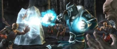
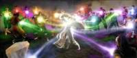
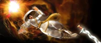

Pre-Mortal Kombat
Los Dioses Antiguos y el Ser Unico
 Al principio de los tiempos en el universo, existían solamente los Dioses Antiguos y el Ser Único. El Ser Único obtuvo su poder al drenarlo de los Dioses Antiguos, consumiéndolos en el proceso. Estos dejaron de lado sus diferencias y lanzaron su ataque contra el Ser Único para salvarse. Al final, los Dioses Antiguos crearon seis armas llamadas Kamidogu. Cuando usaron las armas, el Ser Único se fragmentó, aunque su conciencia sobrevivió. Los Kamidogu se perdieron en seis diferentes piezas del Ser Único. Finalmente, estas piezas se convirtieron en los reinos, y la vida comenzó a surgir dentro de ellos. Existieron seis reinos principales: Earthrealm, Netherrealm, Outworld, Orderrealm, Chaosrealm y Edenia, cada uno con un Kamidogu representativo que contenía la esencia de cada reino. Además de estos, también se crearon otros reinos menores. La conciencia del Ser Único buscaba reunir todos los reinos para volver a hacerse entera, y actuaría a través de seres como Onaga y Shao Kahn, y sería el responsable de sus intentos de fusionar todos los reinos.
Al principio de los tiempos en el universo, existían solamente los Dioses Antiguos y el Ser Único. El Ser Único obtuvo su poder al drenarlo de los Dioses Antiguos, consumiéndolos en el proceso. Estos dejaron de lado sus diferencias y lanzaron su ataque contra el Ser Único para salvarse. Al final, los Dioses Antiguos crearon seis armas llamadas Kamidogu. Cuando usaron las armas, el Ser Único se fragmentó, aunque su conciencia sobrevivió. Los Kamidogu se perdieron en seis diferentes piezas del Ser Único. Finalmente, estas piezas se convirtieron en los reinos, y la vida comenzó a surgir dentro de ellos. Existieron seis reinos principales: Earthrealm, Netherrealm, Outworld, Orderrealm, Chaosrealm y Edenia, cada uno con un Kamidogu representativo que contenía la esencia de cada reino. Además de estos, también se crearon otros reinos menores. La conciencia del Ser Único buscaba reunir todos los reinos para volver a hacerse entera, y actuaría a través de seres como Onaga y Shao Kahn, y sería el responsable de sus intentos de fusionar todos los reinos.
Onaga
Mucho después de la creación de los reinos, gobernó un emperador en el reino de Outworld, el Rey Dragón, Onaga.
Onaga pronto comenzó a conquistar otros reinos, fusionándolos para agregar el poder de ese reino a Outworld y expandir su siempre creciente imperio. El secreto de Onaga para la victoria era su ejército invencible. El corazón de Onaga le daba la habilidad de resucitar a los muertos, lo que le permitía revivir a sus soldados muertos continuamente. Sin embargo, Onaga deseaba vivir para siempre; usando el último huevo de dragón, sus seguidores usaron un hechizo que transferiría su cuerpo al pequeño dragón que estaba dentro y con él obtendría la vida eterna.
Fue en este punto, que el asesor de confianza de Onaga, Shao Kahn, lo traiciono. Sin embargo, Kahn sabía que perdería si luchaba directamente contra Onaga, por lo que enveneno a Onaga y tomó el control de Outworld. A diferencia de Onaga, Shao Kahn no fue capaz de gobernar como un reino unido.
Profecías del Armagedón
Tiempo después de la muerte de Onaga, el Dios protector de Edenia, Argus, y su esposa hechicera, Delia, tuvieron dos hijos: Taven y Daegon. Lucharon junto a su padre y los dragones Orin y Caro, repeliendo un intento de invasión de Shao Kahn. En ese momento, Delia frecuentemente tenía visiones y premoniciones del futuro y había dos profecías del futuro.
Uno de los eventos fue La Profecía del Armagedón. Ella predijo que los guerreros del Mortal Kombat algún día se volverían demasiado poderosos y numerosos y que si no eran controlados, sus combnates intensificados traerían la destrucción de todos los reinos, provocando el Apocalipsis. Los Dioses Antiguos exigieron que se estableciera una salvaguarda para evitar que esto ocurriera, una que hiciera uso de la sed de sangre insaciable de los combatientes. Dejaron esta tarea a Argus y su esposa. Delia predijo que el clímax tendría lugar en un cráter dentro de las Tierras Meridionales de Edenia. Por esta razón, Argus hizo que se construyera una pirámide bajo tierra en este cráter, mientras que Delia creó un engendro de fuego conocido como Blaze. Blaze contendría el poder necesario para detener a los guerreros del Mortal Kombat.
Argus inició el plan para salvar los reinos convocando a los dos hermanos en el templo de Argus en Edenia, donde fueron emboscados y puestos en estasis. Ambos fueron colocados dentro de las montañas en algún lugar del Reino de la Tierra, con un Dragón para vigilarlos. El Dragón Dorado, Orin, velaría por Taven, mientras que el Dragón Rojo Caro cuidaría de Daegon. Cuando Blaze diera la señal, los Dragones despertabarían a sus protegidos del estasis para comenzar la búsqueda
Shinnok y la Guerra de Earthrealm
Los Dioses Antiguos vigilaban los reinos y los gobernaban, uno de esos Dioses Antiguos, conocido como Shinnok, cedió a la codicia y la ilusión del poder supremo y deseaba poseer el Reino de la Tierra, Earthrealm. Sin embargo, los Dioses Antiguos habían designado al Dios del Trueno conocido como Raiden para proteger la Tierra. Habiéndose beneficiado de que Blaze había sido esclavizado por los santos que permanecieron fieles a Onaga, Shinnok engañó magistralmente al dragón Caro haciéndole creer que la señal había sonado y convenció a Daegon de que sus padres (Argus y Delia) estaban en contra de él. Daegon mató a sus dos padres debilitando Edenia y dejándolo en un estado de anarquía, lo que permitió a Shao Kahn invadirlo sin un Dios Protector que se le opusiera.
Sin embargo, los Dioses Antiguos habían designado al Dios del Trueno conocido como Raiden para proteger la Tierra. Habiéndose beneficiado de que Blaze había sido esclavizado por los santos que permanecieron fieles a Onaga, Shinnok engañó magistralmente al dragón Caro haciéndole creer que la señal había sonado y convenció a Daegon de que sus padres (Argus y Delia) estaban en contra de él. Daegon mató a sus dos padres debilitando Edenia y dejándolo en un estado de anarquía, lo que permitió a Shao Kahn invadirlo sin un Dios Protector que se le opusiera.
Shinnok dirigió su atención hacia Earthrealm, cuyo Jinsei podría otorgarle el poder de volverse invencible. La guerra entre Shinnok y Raiden fue feroz, como resultado del conflicto la Tierra llegó casi a su destrucción, sumergiéndola en siglos de oscuridad, pero Raiden descubrió que el poder de Shinnok estaba vinculado a su Amuleto místico. Ya que este le permitió debilitar las fronteras de un reino y, por lo tanto, entrar en el reino sin problemas y mantener a raya a los Dioses Antiguos. Raiden, teniendo la opción de destruir la civilización Sauriana aliada o arriesgarse a entregar el Reino de la Tierra a Shinnok, eligió la primera y despojó a Shinnok del amuleto, con la ayuda de los Dioses Antiguos, desterrando al caído Dios Antiguo al Inframundo, Netherrealm. La fecha exacta de la guerra devastadora en Earthrealm no se conoce, pero las interpretaciones varían desde hace alrededor de 66 millones de años al final del período Cretácico-Paleógeno, coincidiendo con la desaparición de los dinosaurios a alrededor de 8.000 años antes de Cristo, coincidiendo con la Gran Inundación en mitos mesopotámicos, babilónicos, cristianos, hindúes y de muchas más civilizaciones y también coincidiendo con la fecha de la Guerra de Edén, hace 10.000 años. Los sobrevivientes saurios recibieron una compensación de parte de los Dioses Antiguos, un nuevo hogar en el reino libre de Zaterra, donde nuevamente construirían su civilización hasta que ellos también se convirtirían en un objetivo para el Imperio de Shao Kahn.
La fecha exacta de la guerra devastadora en Earthrealm no se conoce, pero las interpretaciones varían desde hace alrededor de 66 millones de años al final del período Cretácico-Paleógeno, coincidiendo con la desaparición de los dinosaurios a alrededor de 8.000 años antes de Cristo, coincidiendo con la Gran Inundación en mitos mesopotámicos, babilónicos, cristianos, hindúes y de muchas más civilizaciones y también coincidiendo con la fecha de la Guerra de Edén, hace 10.000 años. Los sobrevivientes saurios recibieron una compensación de parte de los Dioses Antiguos, un nuevo hogar en el reino libre de Zaterra, donde nuevamente construirían su civilización hasta que ellos también se convirtirían en un objetivo para el Imperio de Shao Kahn.
Otra profecía legendaria sin el conocimiento de los Dioses Antiguos fue el regreso del Ser Único. Se decretó que si se obtenían los seis Kamidogu y el Amuleto Sagrado, se les otorgaría el poder máximo para fusionar las 7 armas en una sola y provocar la destrucción de los reinos. Raiden, para evitar que esto sucediera, creó un enorme templo en las profundidades de las montañas de Asia para albergar el amuleto, y nombró a cuatro guardianes para que sirvan de protectores del amuleto. Cada uno de estos guardianes representaba uno de los elementos que comprendía el reino: Viento (Fujin), Tierra, Agua y Fuego. Mientras el amuleto permaneció en la Tierra con la esperanza de que estuviera en buenas manos, Shinnok permanecería atrapado en el Netherrealm.
Durante un número desconocido de años, el antiguo Dios Antiguo Shinnok cayó en el tormento de Lucifer en el Netherrealm, hasta que tropezó con un misterioso hechicero llamado Quan Chi. Una vez fue un Oni del Netherrealm, transformo su apariencia al aprender hechicería, incluso obteniendo el poder de viajar a través de todos los planos de la realidad sin ser detectado por ninguno de los Dioses.
Quan Chi dijo a Shinnok que lo ayudaría a escapar de su prisión y vencer a Lucifer si Shinnok aceptaba su propuesta; poder y el derecho a gobernar al lado de Shinnok. Shinnok accedio y convirtió a Quan Chi en un Hechicero Oscuro, y los dos libraron una guerra en el Netherrealm que duró siglos. Finalmente vencieron a Lucifer y tomaron el control del Netherrealm. Shinnok era ahora el regente del reino de los muertos, pero no estaba contento con su conquista, Shinnok quería más de lo que ya tenía.
Ashrah fue un miembro de la Hermandad de la Sombra de Quan Chi, un grupo formado por demonios del Netherrealm. Un día, Ashrah se negó a llevar a cabo una de las órdenes de Quan Chi. En respuesta, él envió a su hermana, otro miembro de la Hermandad de las Sombras, para matarla. Mientras escapaba de su aspirante, ella encontró una espada sagrada conocida como Kriss. Mientras aprendía a empuñar la espada, matando a demonios del Netherrealm con ella, Ashrah comenzó a reconocer que con cada uno de los que mataba, la espada limpiaba progresivamente su espíritu del mal. Luego resolvió liberarse de su naturaleza malévola inherente utilizando el Kriss para eliminar el mal dentro de ella. Cada demonio que mataba la acercaba más a su objetivo de purificación y, consecuentemente, a su eventual expulsión del Netherrealm, ya que esa dimensión no podría contener a nadie con un alma que contenga tanta pureza. Lo que no sabía, sin embargo, era que su espada Kriss era en realidad el "Datusha", un arma mística que mata a los vampiros y que corrompe a su portador con la falsa creencia de que la usan para un propósito mayor con el fin de continuar su genocidio.
El Reinado del Terror de Shao Kahn
Al igual que Onaga antes que él, Shao Kahn busco expandir su imperio y poder a través de la conquista de otros reinos. Atacó y conquistó muchos reinos más pequeños, incluido Zaterra, aumentando su poder lentamente durante miles de años. Finalmente, acumuló el poder suficiente para conquistar cualquier reino igual al tamaño de Outworld, y obtuvo poder más allá del de cualquier aspiración mortal.
Su primer objetivo fue el exuberante y fértil reino de Edenia. Para poder conquistar ese reino, Kahn tuvo que ganar el torneo sagrado establecido por los Dioses Antiguos que se lleva a cabo cada generación, conocido como Mortal Kombat. Si lo lograba, le permitiría fusionar los dos reinos.
ese a los mejores esfuerzos de los guerreros de Edenia, Outworld ganó 10 torneos consecutivos de Mortal Kombat y los cielos azules de Edenia se desgarraron cuando los portales comenzaron a abrirse. La fuerza de invasión de Shao Kahn entro al reino, fusionándolo con Outworld. Shao Kahn asesino al gobernante de Edenia, el Rey Jerrod, tomó a su esposa Sindel como su reina, y adoptó a su hija Kitana como suya. Después de que Sindel convenció a Shao Khan del valor de su hija, Kitana fue entrenada para unirse a su guardia personal, y como asesina. Sindel, sin embargo, al ver los efectos del reinado de Shao Kahn en los habitantes de Edenia, eligió suicidarse para crear una guarda mágica que impidió a Shao Kahn poner un pie en el Reino de la Tierra y reclamar ese reino también. Pero Shao Kahn, que no estaba dispuesto a dejar que su amada reina se fuera tan fácil, y mantuvo su alma en Outworld, evitando así su transición al más allá. Entre los muchos muertos que dejo Shao Kahn en su conquista, estuvo el general del ejército de Edenia, el padre adoptivo de Rain.
Aunque Kitana creció leal al emperador, sin saber que había asesinado a su verdadero padre, Shao Kahn temía que si alguna vez descubría la verdad sobre su pasado, se volviera contra él. Por lo que ordenó a su hechicero Shang Tsung que creara un clon maligno, cruel y leal de Kitana que tomaría su lugar. Tsung combinó la esencia de Kitana con la de Tarkata para lograr este propósito. Dándole el nombre "Mileena" y presentándola como la hermana gemela de Kitana. En lugar de reemplazar a Kitana como se había planeado originalmente, Mileena vigilaría a Kitana y se aseguraría de que permaneciera leal a Shao Kahn. Sin embargo, como Kahn temía, Kitana finalmente descubrió la verdad sobre su pasado y su familia. Aunque siguió fingiendo lealtad a Shao Kahn, planeó en secreto y esperó el momento adecuado para derrocarlo.
Ermac fue creado por el propio emperador Shao Kahn, a través de una fusión de almas. Ermac llevó a cabo misiones para el emperador y fue uno de sus guerreros más letales.
El reino de terror de Shao Kahn lo llevó a conquistar al pueblo guerrero conocido como Osh-Tekk. Aunque su rey Kotal K'etz se rindió a Shao Kahn, secretamente envió a su hijo pequeño a Earthrealm. Fue allí donde el hijo de Kotal tropezó con la civilización maya y se convirtió en un dios para ellos. Lo adoraron como "Buluc", el dios de la guerra y el sacrificio. Eventualmente, su gente murió y él regresó a Outworld.
El Torneo de Mortal Kombat y Shang Tsung
Habiendo pasado unos milenios, ahora con Edenia conquistada y otros reinos añadidos al imperio del Outworld, Shao Kahn centró su atención en la conquista del Reino de la Tierra, Earthrealm, que muchos consideraban una joya. Shao Kahn envió a Shang Tsung para establecer el torneo sagrado como una competencia entre sus ejércitos y Earthrealm. El premio para el ganador de Mortal Kombat sería que el campeón no envejecería durante 50 años hasta el próximo torneo. Kahn solo podría tomar Earthrealm si ganaba diez de estos torneos consecutivos. Para evitar que Outworld tomara control de Earthrealm, Raiden comenzó a sectar monjes Shaolin llamados la Sociedad del Loto Blanco, con la finalidad de entrenar guerreros para luchar por Earthrealm en Mortal Kombat.
En un momento, Outworld estaba al borde de la victoria final, ya que su campeón, el hechicero demonio Shang Tsung, había obtenido nueve victorias consecutivas. En el décimo torneo, sin embargo, fue derrotado por un monje Shaolin llamado Kung Lao. El Gran Kung Lao fue nombrado el gran héroe de Earthrealm y el nuevo Campeón de Mortal Kombat, pero en el próximo torneo, Shang Tsung regresó.
Luego que uno de los grandes maestros del torneo muriera misteriosamente, se permitió que el ahora anciano Shang Tsung tomara su lugar. Tsung luego presentó a su nuevo alumno y campeón de Outworld, un Shokan de cuatro brazos llamado Goro. El nuevo guerrero derroto y mato a Kung Lao, marcando el final del control de los Shaolin del torneo, ya que Tsung tomaría el control de este inmediatamente después, moviendo la competencia a su isla privada en el Mar Perdido (una ubicación del Triangulo de las Bermudas existente entre la Tierra y Outworld) y corromper las reglas, permitiendo a los competidores matarse unos a otros para su diversión. Durante los siguientes 500 años, Goro acumulo nueve victorias consecutivas. El torneo de la próxima generación sería el décimo que él y Shang Tsung necesitarían para que los Dioses Antiguos permitieran a su emperador poner un pie en el Reino de la Tierra y reclamarlo como suyo.
La Búsqueda de los Kamidogu
Atrapado en la muerte durante siglos después de haber sido traicionado por Shao Kahn, el Rey Dragón se entera de la traición de Shao Kahn, enfureciéndolo, por lo que en secreto conspiro para revivir su cuerpo físico. Al transferir su esencia a una aparición, se apareció ante Shujinko, un guerrero muy prometedor que se convertiría en el combatiente de Earthrealm elegido en un próximo torneo de Mortal Kombat. Al afirmar ser un emisario de los Dioses Antiguos llamado Damashi, engañó a Shujinko para que se embarcara en una misión para obtener los Kamidogu de los diversos reinos y colocarlos en el Nexus, un lugar especial creado entre los reinos para facilitar el viaje del Campeón de los Dioses Antiguos. Para ayudar a Shujinko en la búsqueda, Damashi inculco místicamente a Shujinko una habilidad mejorada para observar y luego poseer las habilidades de combate de los guerreros con los que se cruzara. Shujinko reclama entonces el Kamidogu de Earthrealm para dar inicio a su aventura.
Bo' Rai Cho enseñó a varios grandes guerreros, como el legendario Musō Gonnosuke, y también enseñó a Shujinko
Shujinko tardaría décadas en reunir los Kamidogu. Sin embargo, viajaría mucho por los reinos y su talento innato en combate aumentaría dramáticamente. Shujinko enfrentó peligro y aventuras en todo momento. Al principio de su misión, luchó brevemente junto a los Lin Kuei durante este tiempo aprendió los secretos de los Cryomancer del clan. 
Darrius es un Seidano que se desilusionó con la naturaleza opresiva de Seido. Como resultado, desertó y comenzó a liderar un movimiento de resistencia para derrocar al Senado de Orderrealm, y aprovechó las Leyes de Orden para manipular a los habitantes para que participaran en el movimiento de resistencia. Una táctica que utilizo fue asesinar a la familia de un miembro de la guardia, llamado Dairou, que luego buscaría venganza y sería expulsada de la Guardia. Entonces estaba listo para unirse a sus filas. Otros se unieron a él por su propia voluntad, como el Clerigo del Caos, Havik.
Tiempo después, Shujinko viajaría al oscuro Netherrealm, allí conoce a Ashrah, quién se alía con Shujinko y le enseña técnicas de asesinato demoníaco. Ermac se familiariza con Shujinko y se ofrece a enseñarle sus habilidades a cambio de su ayuda. Ermac estaba en Netherrealm para matar a un demonio, pero Netherrealm agotó el poder de Ermac y solo la Piedra de Almas puede detener este proceso. Shujinko encuentra la piedra y la llevá a Ermac quien le agradece su ayuda y se ofrece a entrenar a Shujinko. Más tarde, Ermac fue asaltado por Ashrah, que creía que era un demonio, pero él logro detener su ataque y derrotarla.
Shujinko viaja a Chaosrealm, y conoce a Havik, quién se ofreció a entregarle cuatro colgantes del Caos para colocarlos alrededor del cuello de los invasores de la Guardia Seidan que buscaban controlar y alterar el agua de Chaosrealm para sus propios fines. Shujinko estuvo de acuerdo y completó su tarea. Después, Havik mostró a Shujinko los caminos y le dio la llave de un antiguo laberinto que le daría acceso al Kamidogu de Chaosrrealm
Shujinko viajo a Outworld, mientras exploraba el peligroso reino de Outworld, se enfrentó a Mileena y una horda Tarkata, que se disponían a masacrar a todos en la ciudad cuyo prefecto, Zeffeero había desafiado a Shao Kahn. Zeffeero entonces pidió a Shujinko que obtuviera ayuda de Orderrealm. Decidido a evitar una masacre inimaginable, viajó a Orderrealm 
Allí, después de ayudar a sofocar un levantamiento instigado por Darrius y el movimiento de resistencia, Shujinko solicitó la ayuda de Hotaru y la Guardia Seidan, Sin embargo, sin tener nada que dar a cambio le ofreció a Hotaru la ciudad misma como pago, que pronto cobro. Derrotando al ejército de Mileena, Hotaru liberó a Zeffeero de su mando y se hizo cargo de la ciudad en nombre del Orden. Liberando la ciudad de los Tarkata y su gente.
El Dragón Rojo y el Dragón Negro
El clan del Dragón Rojo había existido en secreto durante siglos y fue creado por el semidios Daegon. Formando rápidamente un grupo de seguidores humanos liderados por el guerrero Mavado, el clan se convirtió en un grupo de guerreros altamente capacitados y disciplinados. Sin embargo, muchos de los miembros más imprudentes se sintieron insatisfechos con las restricciones que se vieron obligados a sufrir, así como el código del Dragón Rojo que regía sobre ellos. Por lo tanto, este grupo se separó para formar su propio clan conocido como el Dragón Negro, fundado por Morihei Ueshiba en la primera mitad del siglo XX. La prioridad número uno del clan padre desde ese día fue erradicar al grupo infiel.
Un luchador nato, Kenshi deambuló por Earthrealm en busca de un oponente digno. Cada vez que encontraba un oponente, lo derrotaba solo para aumentar su orgullo, pero un día, Kenshi se encontró con un hombre llamado Song, quien convenció a Kenshi de que un gran guerrero necesitaba una gran espada. Song condujo a Kenshi a la ubicación de una espada antigua y poderosa, y afirmó que la espada sería adecuada para el poder de Kenshi, pero cuando Kenshi abrió el pozo donde supuestamente estaba la espada, se vio superado por las almas atrapadas y quedo cegado permanentemente. Song reveló que no era otro que el vil hechicero Shang Tsung y procedió a absorber las almas liberadas, dejando que Kenshi muriera dentro de la tumba. Sin embargo, la espada, que en realidad sí existía, atrajo a Kenshi y le habló, lo condujo desde la tumba y le reveló su origen.
La espada originalmente pertenecía a una larga línea de grandes espadachines de los cuales descendiá Kenshi; el pozo donde yacía la espada era también el lugar de descanso sagrado de las almas de los antepasados de Kenshi, almas que fueron robadas por Shang Tsung. Kenshi pasó la siguiente década más o menos reentrenando sus sentidos, todo mientras buscaba a su traidor y contaminador de su ascendencia,
Mientras que el Dragón Negro obtuvo notoriedad en todo el mundo, el Dragón Rojo marcó a todos los renegados a muerte, y el gobierno de los Estados Unidos formó las Fuerzas Especiales para ocuparse de las actividades de ambos clanes. Jax Briggs, un comandante en las Fuerzas Especiales, fue capaz de rastrear y destruir el Dragón Negro después de su escape de la prisión, matando a todos menos a Jarek, que se presume murió, en su misión de arrestar a Kano, el líder del Dragón Negro. y evitar que recupere un artefacto de gran poder llamado Ojo de Chitian. Jax derrotó a Kano en una feroz batalla y lo arrestó. Kano no permaneció bajo custodia por mucho tiempo, sin embargo, ya que logró escapar y terminaría ingresando en el torneo Mortal Kombat de Shang Tsung, seguido de cerca por la teniente Sonya Blade.
El Viaje de Sub-Zero

Dos años antes del torneo, Bi-Han, Sub-Zero, era llamado como el ladrón y asesino más astuto de los Lin Kuei. Él y su clan fueron contratados por el hechicero de Netherrealm Quan Chi para recuperar el Mapa de los Elementos en un Templo Shaolin. Sin embargo, sin que Sub-Zero lo supiera, Quan Chi también contrató al ninja japonés, Hanzo Hasashi, Scorpion - del clan Shirai Ryu, antiguos rivales de Lin Kuei, para la misma tarea en caso de que Sub-Zero fallara.
Sub-Zero regresó a la fortaleza de Lin Kuei con el pergamino. Como compensación, Quan Chi cumplió su promesa al Gran Maestro de Lin Kuei, así como la absoluta y total destrucción del Shirai Ryu. Quan Chi también reveló haber contratado a Scorpion.
Quan Chi luego instruyó a Sub-Zero a seguir el mapa hasta un templo en el Himilaya donde el amuleto era custodiado por los Dioses del Viento (Fujin), la Tierra, el Agua y el Fuego. Sub-Zero tuvo éxito en la asombrosa tarea de derrotar a las cuatro deidades. Sin embargo, Cuando Sub-Zero estaba a punto de recuperar el amuleto, Quan Chi se materializó místicamente y se apoderó de él. Él reveló la verdadera naturaleza del amuleto: que había pertenecido a Shinnok, un Dios Antiguo caído que fue desterrado al Netherrealm hace milenios. El amuleto restauraría completamente el poder de Shinnok y estaría listo para desatar nuevamente el caos. Quan Chi entrego un amuleto falso a Shinnok, mientras que conservo el verdadero para si mismo.
Quan Chi desapareció, y Sub-Zero se quedó solo en la cámara. Momentos después, apareció Raiden, el dios del trueno y protector de Earthrealm. Disgustado con Sub-Zero y la avaricia e ignorancia de su clan, Raiden envió a Sub-Zero el recuperar el amuleto, ya que el dios no tenía dominio allí. Conjurando un portal, Raiden envió Sub-Zero al Netherrealm.
Sub-Zero llegó e inmediatamente fue encerrado en la Prisión de Almas por los guardias de Quan Chi. Allí, se encontró con el espectro no muerto de su archienemigo, Scorpion, quien culpó a Sub-Zero de la destrucción de su clan y su familia. Aunque Scorpion no podía morir, fue derrotado por Sub-Zero y obligado a retirarse. Sub-Zero escapó y luchó contra los subordinados de Quan Chi: Kia, Sareena y Jataaka. Las derroto y mato a Kia y Jataaka, pero curiosamente perdono a Sareena. Recuperando sus cristales de transporte, pudo llegar a la fortaleza de Quan Chi y se enfrentó al hechicero.
Quan Chi luego reveló a Sub-Zero que la única razón por la que fue capaz de retener su mortalidad en el Netherrealm fue a causa del mal en su corazón por ser el despiadado asesino que era. Sub-Zero luchó contra el hechicero; sin embargo Quan Chi sería el claro vencedor, Sareena apareció entonces y ayudó a Sub-Zero a vencer a su maestro. Luego le pidió a Sub-Zero que la sacara del Netherrealm, pero ella fue entonces aparentemente asesinada por Shinnok, que ahora tenía el poder del amuleto. Usando su astucia, Sub-Zero agarró el amuleto de Shinnok, quien luego se transformó en un demonio gigante. Finalmente, Sub-Zero escapó a través de un portal creado por Raiden, y entregó el amuleto al dios
Después de regresar a la Tierra, Sub-Zero fue invitado al torneo Mortal Kombat por el propio Shang Tsung. Solo acepto la invitación como un medio para acercarse a Tsung, después de que un misterioso enemigo de Tsung le ofreciera una gran suma de dinero por asesinar al hechicero.
Mortal Kombat
El Décimo Torneo Mortal Kombat
 última oportunidad de Earthrealm en Mortal Kombat se llevó a cabo en la misteriosa isla de Shang Tsung. Los combatientes vinieron de todas partes. Liu Kang de la Sociedad del Loto Blanco. Johnny Cage, el actor que quería demostrarle al mundo que sus habilidades no eran solo efectos especiales y buena edición. Sonya Blade, miembro de las Fuerzas Especiales que busca atrapar a Kano. Sub-Zero, enviado en una misión para asesinar a Shang Tsung. Scorpion, de vuelta de la tumba, bajo la guía de Quan Chi, para vengarse de Sub-Zero. Raiden que estaba más como un guía para los defensores de Earthrealm y no se le permitió competir.
última oportunidad de Earthrealm en Mortal Kombat se llevó a cabo en la misteriosa isla de Shang Tsung. Los combatientes vinieron de todas partes. Liu Kang de la Sociedad del Loto Blanco. Johnny Cage, el actor que quería demostrarle al mundo que sus habilidades no eran solo efectos especiales y buena edición. Sonya Blade, miembro de las Fuerzas Especiales que busca atrapar a Kano. Sub-Zero, enviado en una misión para asesinar a Shang Tsung. Scorpion, de vuelta de la tumba, bajo la guía de Quan Chi, para vengarse de Sub-Zero. Raiden que estaba más como un guía para los defensores de Earthrealm y no se le permitió competir.
Durante el torneo, Scorpion se vengó de Sub-Zero y lo mató. Bi-Han, que era el nombre de Sub-Zero, renació en el Netherrealm como un ser muy parecido a Scorpion, solo que más siniestro, llamado Noob Saibot. Se convirtió en soldado de Quan Chi sin que Scorpion lo supiera.
De todos modos, Liu Kang subió de rango y derrotó tanto a Goro como a Shang Tsung. Johnny Cage, Sonya Blade y Kano detuvieron a un enfurecido Goro y Shang Tsung se retiró al Outworld dejando la isla para explotar, mientras que Liu Kang escapó con la ayuda de Kung Lao. Goro, Sonya Blade y Kano murieron aparentemente cuando la isla colapsó y Johnny Cage fue rescatado por Raiden. 
El Torneo del Outworld
A pesar de que Shang Tsung no pudo hacer frente a su fracaso en el último Torneo Mortal Kombat, Shao Kahn ordenó a la horda de Tarkata atacar a la Academia Wu Shi. La horda de Tarkata asesino a la mayoría de los monjes compañeros de Liu Kang, incluidos sus maestros Shaolin.
Luego de haber sido rescatado por Raiden, Johnny Cage es encontrado e interrogado por el comandante Jackson Bridges, que estaba en busca de su subordinada desaparecida, Sonya Blade, estos le permiten irse y Cage vuelve a su carrera como actor. Liu Kang y Kung Lao encuentran los cuerpos de sus compañeros monjes, esto los enfurece lo suficiente como para buscar seguirlos, son sin embargo contactados por Kuai Liang, hermano menor del viejo Sub-Zero, Bi-Han, quién usando su mismo nombre llega habiendo detectado los portales, temiendo que Outworld hubiese ganado Mortal Kombat, el revela a los Liu Kang y kung Lao que Shang Tsung ha sido visto y esta tras de Cage.

Sonya Blade y Kano quedan atrapados en el Outworld, Sonya logra contactar a Jax y le dice que busque a Johnny Cage o a Liu Kang, antes que se corte la comunicación, poco después Sonya y Kano son capturados por los ejércitos de Shao Kahn.
Mientras filmaba un comercial, Cage es atacado por Shang Tsung y sus subordinados, Baraka, Kitana, Mileena y Kintaro, Jax buscando a Cage. Juntos luchan contra los invasores del Outworld y poco después se les unen Kung Lao, Liu Kang y Sub-Zero, este último intentando un ataque sorpresa contra Tsung que es detenido por Reptile que estaba invisible, Sub-Zero es entonces asistido por Scorpion, quién habiendo asesinado a su hermano mayor, busca protegerlo a cambio.
Shang Tsung desafía a Raiden y los guerreros de la tierra reunidos a un nuevo torneo en el Outworld, luego se retiran de regreso a su reino, entonces los guerreros aceptan el desafío y viajan al otro lado, sin embargo, sin que Raiden y los guerreros de Earthrealm lo supieran, el torneo en Outworld era una trampa de distracción del Emperador en un intento de romper las reglas establecidas por los Dioses Antiguos. Durante el torneo, Baraka se asoció con Mileena para derrocar a Shao Kahn y gobernar Outworld.
Kitana entró al torneo, pero secretamente comenzó a contactar a uno de los héroes de la Tierra, Liu Kang, tratando de ayudarlos a derrotar a Kahn. Tras haberla conocido, durante el torneo, Liu Kang empezó a enamorarse de Kitana. Sin embargo, Kitana fue descubierta por Mileena. Mileena atacó a su traidora "hermana", lo que obligó a Kitana a defenderse. Ella derrotó y mató a Mileena, y al hacerlo reveló que ya no era leal a Shao Kahn. La esencia de Mileena descendió al Netherrealm, alimentando su odio por su hermana gemela.
Una vez más, Liu Kang gana el torneo por Earthrealm al derrotar a Shang Tsung, Kintaro y Shao Kahn. Termina haciendo un agujero en el pecho de Shao Kahn. Sonya fue liberada por Jax quien arrestó a Kano, pero tan pronto como pasaron por el portal a la Tierra, Kano escapó y volvió corriendo a Outworld. Habiendo ganado y rescatado a Sonya, el plan de Shao Kahn es frustrado y los guerreros del Reino de la Tierra prevalecen.
Invasión del Outworld
 Shao Kahn, harto de continuas derrotas en la batalla del torneo, promulga un plan de 10.000 años de antigüedad. Además, Quan Chi pudo ayudar a Shao Kahn a invadir Earthrealm al resucitar a la Reina Sindel en Earthrealm y lavándole el cerebro, Shao Kahm entonces asigno a Sheeva, como guardia personal de la reina resucitada.
Shao Kahn, harto de continuas derrotas en la batalla del torneo, promulga un plan de 10.000 años de antigüedad. Además, Quan Chi pudo ayudar a Shao Kahn a invadir Earthrealm al resucitar a la Reina Sindel en Earthrealm y lavándole el cerebro, Shao Kahm entonces asigno a Sheeva, como guardia personal de la reina resucitada.
Cuando Sindel reencarnó en Earthrealm, Shao Kahn pudo viajar a la dimensión para reclamarla. Como consecuencia de esta acción, el Reino de la Tierra se convirtió en una parte del Outworld, despojando instantáneamente a miles de millones de sus almas. Las fuerzas de Kahn comenzaron a invadir Earthrealm con Raiden reuniendo una selecta colección de héroes cuya alma fue protegida para ayudarlo. Esto incluyó al oficial de policía Kurtis Stryker, un chaman llamado Nightwolf y Kabal, quien era miembro del Black Dragon.

Kano logró salvar su propia vida convenciendo a Shao Kahn de que lo aceptara como instructor de armas para sus ejércitos, siendo un gran conocedor del armamento de Earthrealm. Durante el caos, Shao Kahn ordenó a sus escuadrones de exterminio liderados por Motaro, acabar con los guerreros de la tierra. Kabal logró escapar, pero su cara quedó marcada para siempre, mutilada irreparablemente y quedo forzado a depender de un respirador debido a que le cortaron la tráquea. Otra víctima de la invasión fue Johnny Cage, asesinado por el centauro Motaro. La magia impredecible de la fusión de reinos permitió que Johnny volviera a la vida para poder luchar, aunque solo temporalmente.
Raiden por medio de una visión advirtió a los guerreros elegidos de Earthrealm que Shao Kahn debe ser detenido, pero que no puede interferir; debido a su estado como protector de Earthrealm, no tiene poder en Outworld, y Earthrealm ahora se fusionó parcialmente con Outworld.

Shao Kahn había liberado escuadrones de exterminio por el Reino de la Tierra para que mataran a los sobrevivientes. Además, la protección de Raiden solo se extiende al alma, no al cuerpo, por lo que sus guerreros elegidos deben luchar contra los escuadrones de exterminio y derrotar a Shao Kahn.

Habiendo anteriormente sido condenada al Netherrealm, Mileena se encontró reclutada por el Dios Antiguo caído Shinnok. Shinnok la resucitó y la envió a la Tierra al igual que a Noob Saibot, para espiar durante la invasión de Shao Kahn. También se le concedió la capacidad de leer los pensamientos de Kitana.
Sub-Zero descartó su aspecto de ninja por su disgusto con las prácticas de Lin Kuei, que estaban automatizando a todos sus miembros. Mientras ayudaba a los otros héroes, fue perseguido por Sektor, Cyrax y Smoke, ahora como versiones cibernéticas de ellos mismos. Sub-Zero logró llegar a Smoke, quien lo ayudó a luchar contra los otros cyborgs. Cyrax fue derrotado por Sub-Zero quién lo reprogramo dándole la misión de vencer a Shao Kahn. Poco después, Smoke fue capturado por las fuerzas de Kahn y fue transportado a Outworld como un trofeo, encerrado en las entrañas de la fortaleza de Shao Kahn

La amiga y compañera asesina de Kitana, Jade, que tenía la tarea de localizar y matar a Kitana junto a Reptile, decidió ponerse de parte de ella y defenderla contra Reptile. Kitana y Jade entonces se dispusieron a liberar a Sindel del hechizo de Kahn, pero primero tuvieron que luchar contra Sheeva. Su fuerza bruta no fue suficiente para derrotar a estas dos guerreras altamente calificadas. Sheeva fue derrotada por Kitana y Jade, y se apresuraron a enfrentarse a Sindel, Kitana pudo hacer que Sindel recuperara el sentido y se pusiera de su parte. Avergonzada por su fracaso, Sheeva se retiró a Outworld.
Cuando llegó, se sorprendió al descubrir que Shao Kahn había traicionado a los Shokans y había lanzado una ofensiva contra ellos. Se unió a sus hermanos en la lucha contra los guerreros de Kahn. Los Shokans eran superados en número y no tenían esperanza de ganar, Sheeva decidió entonces tomar venganza de su némesis, Motaro
Rain ayudo a Shao Kahn en sus planes de conquista de Earthrealm. Entrenado en el arte del commbate, Rain luchó de todo corazón para destruir a los guerreros de la Tierra, pero al final la princesa Kitana le informó acerca de la verdadera muerte de su padre adoptivo; que fue asesinado por las propias manos de Shao Kahn. Debido a esto, se une a los guerreros de Earthrealm. Después de estar ausente durante un ataque de un escuadrón de exterminio, se embarca en una misión suicida para destruir a Shao Kahn a fin de demostrar su cuestionada lealtad

Sonya, pronto se encontró a su antiguo enemigo, Kano, en la cima de un rascacielos cerca de la fortaleza de Kahn. Una feroz batalla se libró entre los dos. Pero finalmente, Sonya derroto a Kano, tirándolo a su supuesta muerte desde el techo de un edificio alto, pero fue encontrado por Motaro, quien lo curó y lo encarceló.
Sheeva se coló en el palacio de Kahn en la Tierra. y encontró a Kano. En secreto, se acercó a Kano y le ofreció un trato; Ella solicito su ayuda para asesinar a su emperador, a cambio, ella debía pagarle con joyas preciosas extraídas de las magníficas minas de Kuatan, a lo que Kano aceptó. Poco después, Motaro regreso al palacio para informar a Shao Kahn, con Sheeva esperando en silencio en las sombras. Mientras Kano miraba desde su celda, Sheeva atacó al Centauro desprevenido, y después de una larga y brutal pelea, aparentemente lo mato. Después, Sheeva procedió a enfrentar a Shao Kahn. Kano ofreció distraer a Kahn y le dijo que esperara su señal. Sin embargo, Kano traicionó a Sheeva diciéndole a Kahn que ella mató a Motaro y que ahora planeaba matarlo. Después de que Kano diera la señal, Sheeva entró en la sala del trono donde ella y Kahn pronto se enfrentarían cara a cara. Kahn venció facilmente a Sheeva y la mato. Debido a esto, Kano fue ascendido rapidamente a general del cada vez más pequeño ejército del Outworld.
Casi al final de la batalla, Kung Lao fue aparentemente asesinado por Shao Kahn. Esto le dio a Liu Kang la fuerza adicional necesaria para derrotar a Kahn, quién regreso a Outworld, gravemente herido y derrotado. Edenia fue entonces liberada de Outworld y regresó a ser un reino por primera vez desde que Kahn conquistó Edenia hace tantos años. El último intento de Shao Kahn de conquistar Earthrealm fracaso. Después de que Kahn fuera derrotado, Mileena fue convocada de regreso al Netherrealm con Noob Saibot.

El Regreso de Shinnok

Después de la derrota de Shao Kahn, Goro reapareció. Desafió a Liu Kang en Mortal Kombat, pero volvió a perder ante el monje Shaolin. A pesar de tener la intención de vengar sus derrotas a manos de Liu Kang, Goro comenzó a interesarse por los asuntos de su propia raza y se unió a sus compañeros Shokan en la guerra contra los centauros. Kitana intervino y negoció una y otra tregua incómoda y un acuerdo de paz.
Durante las negociaciones, Kung Lao apareció y desafió a Goro. Quería matar a Goro por vencer a su ancestro, el Gran Kung Lao. Kung Lao hizo un corte en el pecho de Goro dejando una cicatriz en él. Dado que fue un golpe ceremonial, Kung Lao consideró que estaban a mano y los dos se dieron la mano.
Cyrax fue recuperado y reparado por los Lin Kuei. Sin embargo, parecía de alguna manera diferente a cuando fue construido por primera vez. Una vez más, el clan envió a Cyrax a la batalla con su compañero cyborg Sektor asignado para vigilarlo. Ermac que había participado en la invasión del Outworld, después de la derrota de Shao Kahn y que este perdiera su poder, Ermac permaneció bajo el control de Kahn y vagó por Outworld sin instrucciones.
En el Netherrealm, Quan Chi engaño a Scorpion haciéndole creer que Sub-Zero había asesinado a su esposa e hijo habían sido asesinados por Sub-Zero, esto enfureció nuevamente a Scorpion, y juró que mataría a Sub-Zero, así como a su hermano antes que él.
Durante su tiempo en el Netherrealm, Shinnok reunió a un ejército de aliados para ayudarlo a vengar sus derrotas. Con la ayuda de sus disfraces y sus aliados Noob Saibot y Tanya, quién siendo la embajadora permitió a Shinnok y sus guerreros entrar a la recientemente restaurada Edenia como un 'grupo de refugiados'. Shinnok procedió a secuestrar a la Reina Sindel y la Princesa Kitana gobernando con Puño de Hierro tanto como pudo durante su toma de Edenia, como parte de su plan de ataque.

Liu Kang viajó a América en busca de una nueva generación de guerreros Shaolin para entrenar. Mientras estuvo en Estados Unidos, se encontró con su viejo amigo Kai. Los dos viajaron de regreso a China, donde Liu Kang entrenó a Kai para ser un guerrero Shaolin.
Baraka escapó de Outworld y pasó tiempo viajando solo. Baraka se encontró con Quan Chi mientras deambulaba por Edenia. Quan Chi le ofreció a Baraka la oportunidad de gobernar el reino a su lado si aceptaba unirse al ejército de Shinnok. Ansioso por la batalla, aceptó fácilmente.
Tras haber tomado control de Edenia, Shinnok procedió a atacar los Cielos como un audaz acto de venganza, asesino a varios de los Dioses Antiguos y muchos otros dioses por su sufrimiento en el Netherrealm durante millones de años, así ataco el Palacio Eterno. Fujin intentó defender el Palacio y cayó de los Cielos mientras luchaba por protegerlo. Fue perseguido por el Ejército de la Oscuridad de Shinnok y fue salvado por Liu Kang y Kai justo antes de que pudieran acabar con él. El plan de Shinnok involucraba al Jinsei.
Al enterarse de que Kitana había sido capturada, Liu Kang partió por su cuenta para salvarla, pero no tuvo éxito. Liu Kang entonces regresó a la Tierra, donde comenzó a reunir a los guerreros de la Tierra para ayudar a su mentor, Raiden.

Tras la invasión de Shao Kahn, la Agencia de Investigación del Mundo Exterior (OIA), obtuvo importancia y Sonya junto a Jax, miembros de la agencia, disolvieron casi completamente el Dragón Negro (con la ayuda de Hsu Hao, miembro del Dragón Rojo que se infiltro en la OIA para ayudar a exterminar el Dragón Negro), sin embargo. Su último miembro conocido, Jarek, habiéndose enterado de la muerte de Kano huyo a Edenia con Sonya y Jax siguiéndolo.
Al ver esto como una oportunidad para finalmente demostrar que es superior a Kitana, Mileena permitió que su hermana escapara de las mazmorras de Shinnok. Raiden reunió a los guerreros de Earthrealm y viajaron a Edenia, donde se les unieron Sonya, Jax, y Jarek. Pero esta vez, se enfrentan no contra Shao Kahn, sino contra Shinnok y sus secuaces. Durante la batalla, Shinnok se enfrentó a Raiden y lo derrotó, atrapándolo dentro de la pirámide de Shinnok. A pesar de esto, Liu Kang pudo salvar a Raiden y se enfrentó al Dios Antiguo Caído.
Después de que Scorpion derrotara a Sub-Zero, este le revelo a Scorpion la verdad, que el verdadero asesino de la familia de Scorpion era Quan Chi, el hechicero intentó transportar a Scorpion de vuelta al Netherrealm. Pensando rápidamente, el espectro corrió hacia el hechicero, haciendo que ambos fueran enviados al Netherrealm.

Después de una larga y ardua batalla entre Shinnok y el campeón de Mortal Kombat de Earthrealm, Liu Kang salió victorioso una vez más, derrotando a Shinnok y salvando Earthrealm y Edenia. Así, Raiden exilio a Shinnok al Netherrealm. Después de la derrota de Shinnok, los Dioses Antiguos designaron a Raiden como un Dios Antiguo. Raiden luego nombró a Fujin como el nuevo protector de Earthrealm.

que Shinnok y su legión fueran derrotados y Edenia nuevamente liberado, Goro y la raza Shokan decidieron aliarse con los Edenianos. Como condición en su asociación, Goro firmó un tratado de paz con los Centauros. Mileena, fue nuevamente vencida por Kitana y secretamente encerrada en una prisión de Edenia. Después de la derrota del Dios Antiguo caído Shinnok, se hizo evidente que Cyrax había comenzado a experimentar recuerdos de su vida anterior. Los agentes de las Fuerzas Especiales Sonya Blade y Jax Briggs lo llevaron a la sede de la Agencia de Investigación del Mundo Exterior (OIA) y utilizaron su tecnología para restaurar su humanidad. Agradecido por su ayuda, Cyrax se unió a la OIA como un explorador en el reino del Outworld.
Liu Kang regresó a los templos Shaolin, creyendo que había perdido a Kitana para siempre. Sin embargo, la princesa Edeniana apareció a través de un portal de Edenia y agradeció a Liu Kang por todo lo que había hecho. Ella le ofreció la oportunidad de unirse a ella en el trono de Edenia. Sin embargo, debido a sus responsabilidades como campeón de Mortal Kombat, Liu Kang se vio obligada a rechazar su oferta. Aunque amaba a Kitana, tenía que hacer lo que creía correcto.
Después de la derrota de Shinnok, Jarek se resistió a permitir que lo entregaran a las Fuerzas Especiales. Borró su rastro, sin embargo Jax lo encontró y tras una brutal batalla lo tiró por un precipicio.
Kabal fue derrotado y herido gravemente por Mavado, un miembro destacado del Dragón Rojo, que esperaba eliminar al Dragón Negro. Mavado luego tomó las armas insignia de Kabal, las Hookswords, como trofeo
Siendo el último cibernético, durante sus muchas batallas violentas contra las fuerzas de Outworld, la programación de Sektor se corrompió. Él comenzó a creer que el Gran Maestro de Lin Kuei era inferior, y estableció como su nuevo objetivo el eliminarlo y tomar el control del clan.
La Alianza Mortal

Durante los años siguientes que fueron de relativa paz en Earthrealm, Quan Chi los pasó atrapado en el quinto plano del Netherrealm, fue perseguido, brutalizado y torturado constantemente por Scorpion. Quan Chi tenía pocas posibilidades de escapar, ya que sus poderes se debilitaban mientras estaba en el Inframundo, y el poder y la fuerza de Scorpion aumentaban de forma inversa. Quan Chi finalmente hizo un trato con los dos Oni, Drahmin y Moloch, que lucharon contra Scorpion por él, habiéndoles prometido llevarlos con el cuando escapara del Netherrealm.
Sub-Zero regresó al cuartel general de Lin Kuei y descubrió que el Gran Maestro de Lin Kuei fue asesinado por Sektor, quien pensó que el Gran Maestro era inferior y el clan necesitaba uno más fuerte, pero Sub-Zero le impidió adquirir el Medallón del Dragón (símbolo del liderazgo) de Sub-Zero, derrotando a Sektor en una intensa batalla y Sektor huyó a Japón y formó el Tekunin, su propio clan de guerreros ninja cibernéticos
Sub-Zero, poseyendo el Medallón del Dragón, mejoró sus poderes de congelación a niveles que nunca había creído posibles (como un efecto secundario, al parecer, también cambió su apariencia). Se hicieron grandes cambios al Lin Kuei después de la victoria de Sub-Zero. Trasladando el Lin Kuei a un área remota en el Ártico, en un misterioso templo abandonado, donde no se vería afectado y comenzó a entrenarlos como una fuerza para el bien, enseñando a sus alumnos no solo habilidades de combate formidables, sino también el valor de la vida, convirtiéndolos en guerreros experimentados, en lugar de asesinos sin sentido.
Sub-Zero llevó a cabo un torneo en el Templo de Lin Kuei para reclutar guerreros fuertes, y una mujer que sorprendentemente pudo utilizar los mismos poderes de congelación de Sub-Zero emergiendo como la ganador. Impresionado por su excepcional habilidad, Sub-Zero convirtió a Frost en su aprendiz, rompiendo la tradición de Lin Kuei. Si bien ella era una excelente luchadora, Frost no estaba de acuerdo con las filosofías de Sub-Zero y parecía arrogante y distante, lo que generaría cierta fricción entre ella y los aliados de Sub-Zero, específicamente Sonya.
Nitara pasó mucho tiempo tratando de encontrar un orbe misterioso que mantenía unido su reino, Vaeternus al Outworld, buscando poder separar su reino de Outworld. El orbe, sin embargo, era inaccesible para ella, sumergido bajo lava fundida. Afortunadamente para ella, vio al agente de la OIA, Cyrax, viajando por Outworld. Con su cuerpo cibernético, podría descender a la lava y volver con el orbe, ileso.
Debido a su estado de separación de los otros miembros de su raza, y especialmente a su matriarca, Reptile había comenzado a mostrar signos de retroceso en su evolución. Donde solía enmascarar su apariencia haciéndose pasar por un humano, esto ya no era posible. Reptile casi se había vuelto loco y su apariencia había cambiado significativamente, incluido ahora le había crecido una cola. Con los ejércitos de Edenia y Outworld en combate, Shao Kahn solicitó los servicios del hechicero Shang Tsung. Reptile fue enviado para decir a Tsung sobre la solicitud del emperador.
Tras descubrir un portal que llevaba a Outworld, Quan Chi huyó sin Moloch y Drahmin, enfurecidos, Moloch y Drahmin siguieron a Quan Chi a través del portal, pero fueron transportados a un lugar diferente al hechicero. El portal llevó a Quan Chi a la tumba que contenía los restos momificados del Rey Dragón, olvidado desde hacía mucho tiempo. Leyendo las escrituras en el sarcófago del rey, Quan Chi descubrió el ejército invencible y que podía ser revivido. También descubrió información que podría aumentar los poderes de su amuleto. Con una idea en mente de la persona que podría ayudarlo en sus nuevas ambiciones, viajó al palacio de Shang Tsung. Sin embargo, Scorpion lo había perseguido a Outworld, y lucharon, llamándo la atención de Shang Tsung.

Derrotando a Scorpion e impresionando a Tsung, Quan Chi describió su plan a su compañero hechicero (que fue también escuchado por Reptile); Quan Chi abriría un "Soulnado" al cielo, proveyendo a Tsung de almas infinitas, y Tsung lo ayudaría a revivir el ejército del Rey Dragón. Juntos, se embarcarían con determinación para lograr la dominación absoluta de todos los reinos, formando la Alianza Mortal. Pero antes de que pudieran poner en marcha sus planes, tenían que eliminar a las únicas dos personas que podían oponerse a ellos, Shao Kahn y Liu Kang. Comenzaron con el emperador del Outworld, Shao Kahn, aún debilitado por su fallida invasión de Earthrealm, y librando una guerra contra las fuerzas conjuntas de Edenia y los Shokan. Tsung presentó a Quan Chi a Kahn, y prometieron lealtad en un falso espectáculo. Luego lanzaron su ataque rápidamente, matando a Kahn (en realidad, un clon, aunque no tenían forma de saber esto). Kano, general de Kahn que había presenciado el asesinato, les prometió servirles. Sin embargo, sin el conocimiento de la Alianza mortal, el Shao Kahn que mataron era un clon, y el verdadero Shao Kahn había escapado de la muerte una vez más y comenzaría a planear retomar su trono.
Al mismo tiempo, Noob Saibot atacó e hirió mortalmente al Príncipe Goro, por orden de Quan Chi, durante una importante batalla entre los ejércitos de Edenia y Outworld. Debido a la desaparición de Goro, las fuerzas de Edenia se vieron obligadas a retirarse. La princesa Kitana llevo a cabo un funeral real para su antiguo aliado. Sin embargo, Goro fue salvado de la muerte por el mismo Shao Kahn, con la promesa de devolver a los Shokan a su antigua gloria y desterrar a los Centauros a cambio de su lealtad. Aceptando el trato, Goro puso su sello real sobre un Shokan desfigurado cercano caído y reasumió su lugar al lado de Shao Kahn.

Poco después, utilizando un portal conocido solo por hechiceros y deidades, la Alianza Mortal se dirigió a la Academia Wu Shi en Earthrealm, para acabar con su próximo objetivo, el campeón de Mortal Kombat Liu Kang que se encontraba en la academia practicando un kata. Bajo el disfraz de Kung Lao, Tsung se coló y luchó contra Liu Kang. Quan Chi atacó a Liu Kang por la espalda con un ataque de bola de fuego, lo tomó completamente por sorpresa y lo debilitó. Tsung aprovechó la oportunidad para romper el cuello de su viejo adversario, asesinándolo y consumiendo su alma.
Kenshi, como agente de la OIA, que había viajado a Outworld para buscar a Cyrax (y además buscando la oportunidad para vengarse de Shang Tsung), viajando por Outworld, se encontró con el enigmático Ermac y, en un momento de compasión, rompió el control mental que Shao Kahn tenía sobre él. En agradecimiento, Ermac enseñó a Kenshi el Golpe Telekinetico.
Al regresar a Outworld, la Alianza Mortal ordenó a las tropas de Kano atacar un pequeño pueblo de Outworld, Sun Do, y esclavizar a los habitantes, haciéndolos construir un nuevo palacio alrededor de la tumba del Rey Dragon para albergar ahí el Soulnado. Luego que una de las habitantes del pueblo, Li Mei, atacara a Kano, le ofrecieron liberar su pueblo si ella podía ganar un torneo que tendrían. Casi al mismo tiempo, se acercaron a Mavado, viendo al Dragón Rojo como un gran aliado potencial para su eventual dominio del Reino de la Tierra. Mavado fue contratado para eliminar a Kenshi, un viejo enemigo de Tsung que recientemente lo había estado espiando, a cambio del último miembro del Dragón Negro: Kano, en ese momento un general al servicio de la Alianza Mortal. También solicitaron que el Dragón Rojo destruyera los tecnoportales de la OIA para evitar que las Fuerzas Especiales puedan viajar a Outworld.

Hsu Hao, miembro del Dragón Rojo infiltrado en las Fuerzas Especiales recibió instrucciones de Mavado de destruir su base subterránea y, con ella, su único medio de viajar entre reinos. Él armo un arma nuclear en miniatura y escapó por el portal justo antes de que explotara. Como resultado de su traición, su antiguo superior en las Fuerzas Especiales, Jax, que apenas escapó con vida, se dispuso a hacer pagar al traidor
En su camino de regreso para informar a su maestro, Nitara distrajo a Reptile y le reveló que conocía su civilización perdida. Ella le dio la espada Kirehashi, que era un artefacto de la civilización de Zaterra, como prueba y le reveló a Reptile la ubicación de las fuerzas de Kitana. Reptil sabiendo que este conocimiento sería de gran ayuda para su maestro en la guerra con Edenia corrió a decirle al emperador, pero ya era demasiado tarde; Shao Kahn yacía asesinado en el piso. Reptile entonces ofreció sus servicios a Nitara, agradecido por su aparente bondad. Él se comprometió a servirla, y ella le ordenó atacar a Cyrax, describiéndolo como un invasor del Reino de la Tierra, y explicando que podría debilitarse al destruir la consola de su brazo, que Nitara sabía que el cyborg necesitaba para viajar entre reinos.
Quan Chi usó su amuleto para abrir el Soulnado, un portal a los Cielos a través del cual Shang Tsung convocó a las almas de innumerables guerreros para animar al ejército del Rey Dragón. Para proteger Earthrealm una vez más, Raiden perdió su lugar como un Dios Antiguo y reunió a los guerreros de Earthrealm para parar esta amenaza inminente, así que juntó un equipo para luchar contra los hechiceros, salvar el mundo, y vengar la muerte de Liu Kang: Kung Lao, Johnny Cage, Sonya, Jax, Kitana, Sub-Zero y Frost. Los convocó a la isla abandonada de Shang Tsung y desde ahí viajaron a Outworld.
En Outworld, Cyrax fue emboscado por los dos Oni, Moloch y Drahmin. Después de ahuyentar a los dos demonios haciendo uso de sus bombas, fue atacado por Reptile, quién lo ataco por sorpresa dañando la consola de su brazo, luego Reptile fue derrotado por Cyrax y huyo. Nitara se presentó a Cyrax inmediatamente después, e hizo su propuesta: teniendo la capacidad de viajar entre reinos a través de los poderes de su gema, ella lo enviaría a casa, con la condición de que recuperara el orbe para ella. Aunque desconfiaba de ella, Cyrax aceptó, teniendo pocas opciones.
Kung Lao buscó al maestro de artes marciales Bo' Rai Cho quién entrenó a Kung Lao por un corto tiempo, enseñándole la maniobra de 'Patada de Torbellino'. Juntos, se unieron a los otros guerreros en el asalto contra los dos hechiceros. Luego invitó a Bo 'Rai Cho a unirse a él para regresar a Earthrealm y entrenar a más guerreros en la Academia Wu Shi.
Mavado rastreo y enfrentó a Kenshi, derrotó al espadachín y dejándolo para morir. Entonces Mavado pudo tener su pelea con Kano; sin embargo, en lugar de matar a su enemigo, Mavado capturó a Kano e hizo que sus secuaces del Dragón Rojo lo llevaran a su cuartel general. Mavado envió a Hsu Hao a matar a Shang Tsung bajo las órdenes de Quan Chi. En su camino al palacio de Shang Tsung, fue atacado por Jax, quién lo arrincono y le arranco su corazón artificial dandolo por muerto.


Los Oni, se refugiaron en un bosque y devoraron a aquellos que vagaban demasiado cerca de sus fronteras. Li Mei se acercó demasiado al bosque, pero escapó entre los árboles. Después de eso, fueron enlistados por otro hechicero, Shang Tsung. Fueron retenidos en el sótano de su palacio, como un seguro, si Quan Chi se volvía contra él.
Mientras los otros guerreros del Reino de la Tierra se preparaban para el ataque contra la Alianza Mortal, Bo 'Rai Cho se colo y espió en el palacio de Shang Tsung, encontrando y rescatando a Li Mei, otra nativa de Outworld que habiendo ganado el torneo de Quan Chi, "gano" el derecho a ser atrapada por siempre en uno de los cuerpos de los soldados del Rey Dragón.

Cyrax y Nitara viajaron a la ubicación del orbe, la cámara de incubación de Onaga. Allí, ambas partes cumplieron su parte del trato: Cyrax descendió a la lava y recuperó el orbe, y Nitara envió al cyborg a casa. Con el orbe en sus manos, sus planes habían tenido exito. Luego lo rompió en pedazos en el piso, separando por fin su reino de Outworld. La energía liberada la dejó inconsciente, pero cuando despertó, estaba en casa. Luego hizo su misión proteger la frágil estabilidad de su reino.
El ser de fuego Blaze fue liberado de las profundidades de la lava por la explosión después de años de proteger el último huevo de dragón mientras continuaba su búsqueda original antes de ser sometido y capturado por los santos de Onaga. Ahora libre, Blaze pudo retomar su tarea original.
Cuando Sub-Zero y Frost se separaron de los otros guerreros del Reino de la Tierra en Outworld, Frost logró robar el Medallón del Dragón. Incapaz de controlar las poderosas del medallón, ella fue consumida por sus propias habilidades de congelación y aparentemente murió. Sub-Zero se culpo a si mismo por su muerte, sintiendo que no había podido apagar su orgullo y enseñarle las mismas filosofías de vida que él tenía.
Los campeones de Earthrealm de Raiden entonces se enfrentaron a la Alianza Mortal. Sin embargo, durante la batalla Jax, Johnny Cage y Sonya fueron asesinados por el ejército de Tarkata, mientras que Kung Lao y Kitana fueron asesinados por la Alianza Mortal. Scorpion fue emboscado por Moloch y Drahmin y arrojado al Soulnado. Con todos los héroes de la Tierra atrapados, heridos o muertos, Raiden decidió enfrentar por si solo a la Alianza Mortal.
El Regreso del Rey Dragón
Le tomo años a Shujinko completar la búsqueda que Damashi le había encomendado, pero finalmente Shujinko recogió el sexto y último Kamidogu de Edenia, tras ayudar a la reina Sindel a rechazar un intento de invasión por parte de Shao Kahn. Shujinko colocó el Kamidogu de Edenia en el altar en el Nexus junto con los otros cinco. Después de que el Kamidogu fue recogido, el huevo en el que se encontraba Onaga hizo eclosión; El Rey Dragón reasumió su forma física al fusionarse con el ninja Reptile, que rastreo a Nitara y Cyrax hasta el lugar donde se encontraba el huevo. De vuelta en el Nexus, Shujinko comenzó a preguntarse por qué los seis Kamidogu no habían sido transportados a los Dioses Antiguos como se le había dicho, y luego Onaga emergió en el Nexus para confrontar a Shujinko, revelándose como Damashi todo el tiempo. Onaga revela su verdadero plan de obtener el control de todo lo que existe una vez que reclame el amuleto de Shinnok, actualmente en posesión del hechicero Quan Chi, y que utilizo a Damashi para manipular a Shujinko hace 41 años. Shujinko escapa de Onaga hacia el portal de Earthrealm.
Raiden, se enfrentó a la Alianza Mortal por su cuenta. A pesar de que logró enfrentar hábilmente a los dos hechiceros, finalmente fue derrotado por su poder combinado. Con la victoria en sus manos, Shang Tsung y Quan Chi se enfrentaron el uno contra el otro, cada uno buscando hacerse con todo el poder. Quan Chi salió victorioso, pero la victoria del Hechicero fue efímera, ya que el Rey Dragón, Onaga regresó a Outworld, buscando recuperar el amuleto de Shinnok.
Quan Chi procedió a tratar de detenerlo, y Shang Tsung y Raiden procedieron a ayudarlo, formando una nueva alianza frente a la desesperación. Este ataque parecio tener éxito en un principio, pero rápidamente el Rey Dragón siguío avanzando hacia ellos. Al darse cuenta de que no podían vencer al Rey Dragón, incluso con su poder combinado, Raiden desató todo su poder en una explosión similar a un arma nuclear, destruyendo el templo y sus alrededores, sacrificando su vida. Desgraciadamente, este sacrificio fue en vano ya que la explosión tuvo poco o ningún efecto sobre el antiguo gobernante de Outworld, que ahora estaba en posesión del amuleto de Shinnok.
La esencia de Raiden, ahora corrompida por su encuentro con Onaga y contaminada con su magia oscura, resurgió en Earthrealm. Ahora enfurecido con la forma en que los habitantes del Reino de la Tierra habían tratado su propio reino, casi siempre dando su protección por sentada. Al enterarse de que Shujinko había liberado sin saberlo al Rey Dragón al obtener los Kamidogu de varios reinos para él, Raiden decidió que iba a castigar a aquellos que pusieron en peligro al Reino de la Tierra, comenzando con Shujinko. Trató de asesinarlo brutalmente por sus errores, pero Shujinko pudo sobrevivir y vencerlo, luego Raiden volvió su atención hacia el cadáver de Liu Kang.
Onaga, El Rey Dragón, se convirtió en el nuevo maestro de Baraka, luego de encontrarlo, el cual tenía gran fe en su fuerza. Después de liberar a Mileena de su prisión, Baraka la reclutó en las filas de Onaga. entonces se le ordenó a Mileena hacerse pasar por Kitana, con el fin de engañar a los ejércitos de la princesa, mientras que Onaga reuniá sus fuerzas. Mileena aceptó, viendo esto como una posibilidad de vengarse de Kitana. Sin embargo, cuando Mileena comenzó su engaño, también comenzó a considerar tomar el control de los ejércitos para sí misma.
Onaga revivió a los guerreros de la Tierra muertos como sus peones y los utilizó en una alianza recién forjada con la horda de Tarkata evitando que el ejército de Edenia interfiriera con sus planes mientras buscaba los hechizos que le permitieran fusionar los Kamidogu y otorgarle el poder supremo, con ayuda de Tanya, quién nuevamente traiciono a Edenia ayudando al Rey Dragón en su búsqueda, Onaga luego envió a los guerreros revividos al Bosque Viviente. También se unió a Onaga el Guardián de Seido, Hotaru y sus fuerzas, creyendo que este gobernante recién resucitado pondría orden en el universo, Hotaru decidió ayudar a las hordas Tarkata de Onaga en sus ataques y busco acabar con aquellos que se interpusieran en sus planes.

Mientras buscaba un lugar para enterrar a Frost, Sub-Zero se encontró con las ruinas de una civilización del Outworld capaz de manipular el frío. Después de un cuidadoso estudio e investigación de esta raza, los Cryomancer, se dio cuenta de que él y Frost eran descendientes de esta raza. Enterrándola y perdonándola por su traición, Sub-Zero se puso una armadura antigua encontrada en las ruinas y esta aumentó enormemente sus poderes. Se dirigió hacia el portal, para encontrarse con Raiden y las fuerzas de Earthrealm. En su camino a través de Outworld, fue atacado por un grupo de guerreros Tarkata. Después de matarlos en el Bosque Viviente, fue seguido por su nuevo aliado Hotaru.
Libre para perseguir sus propios intereses, y sin interés alguno en los asuntos relacionados con el ascenso de Onaga, Noob Saibot, planeó crear su propia legión de asesinos. Mientras buscaba la fortaleza abandonada de Shao Kahn, descubrió el cuerpo inerte de Smoke. Al reprogramar al cyborg para que permaneciera fiel a él, reactivó su nanotecnología y ideo planes para crear un ejército de ciberdemonios, utilizando a Smoke como plantilla. Su alianza se denomino "Noob-Smoke". Ashrah se dedico a buscar a Noob Saibot, a quien ella consideraba un poderoso demonio, para matarlo, ya que hacerlo le permitiría completar su ascensión.
Havik abandono Chaosrealm buscando interferir con el plan de Onaga, se encontró con Kabal gravemente herido, que había sido derrotado por Mavado del Dragón Rojo. Al curar las heridas de Kabal, Havik logró convencer a Kabal para restaurar la antigua gloria que el clan del Dragón Negro una vez poseía en nombre de la anarquía, algo que promovería el caos en el Reino de la Tierra. Pese a sus anteriores luchas contra las fuerzas de Shao Kahn, Kabal acepto. Tiempo después, Kabal viajó a Earthrealm donde se enfrentó a Mavado una vez más, y recuperó sus Hookswords. En Earthrealm reclutó a dos miembros más para el Dragón Negro, Kira y Kobra. Havik, Kabal y sus nuevos reclutas, se aventuraron entonces en Outworld, donde se unieron a la batalla contra el Rey Dragon, para intentar hacer realidad el plan de Havik de devorar el corazón de Onaga.
Jade, que había presenciado el momento en que Onaga revivió a los guerreros de la tierra, los siguió en secreto, solo para descubrir que ya habían invadido Edenia y habían encerrado a la reina Sindel en las mazmorras de su propio palacio. Jade se infiltra y encuentra entonces a su Reina custodiada por la resucitada Kitana, Jade se enfrento a Kitana y logró atraparla en una celda mientras liberaba a Sindel. Kitana luego comenzó a gritar a los guardias para que las capturaran, lo que obligó a Jade y Sindel a huir al portal hacia Outworld. Antes de atravesar el portal, Jade vislumbró a la traidora, Tanya, de pie junto a Onaga. Jade haría de su misión personal el buscar justicia contra Tanya, que había traicionado a Edenia por segunda vez.
Sub-Zero pronto encontró al mortalmente herido espadachín Kenshi en Outworld y le salvó la vida. Kenshi le informó sobre el fracaso de Raiden y sus fuerzas. Habiendo anteriormente muerto Shang Tsung tras el regreso de Onaga, Kenshi sintió que las almas de sus antepasados regresaban a su espada, indicando el final de su búsqueda de venganza. Sub-Zero y Kenshi decidieron regresar a Earthrealm juntos. Cuando Hotaru los ataco por sorpresa y cegó temporalmente a Sub-Zero, esta vez fue Kenshi quien defendió la vida de su nuevo compañero. Juntos vencieron a Hotaru y continuaron su camino. Darrius contrató a Dairou, un ex-guardia de Seido, para matar a Hotaru, el líder de la Guardia Seidan.
Sacando el cuerpo de Liu Kang de su tumba, Raiden lo llevó a un templo subterráneo que pertenecía a una antigua secta de Necromancer llamada Houan, que había destruido siglos atrás. Encadenando el cuerpo de Kang con grilletes encantados que los Houan habían usado para controlar a sus muertos vivientes reanimados, Raiden dijo los encantamientos grabados en las paredes del templo infundiéndolo en relámpagos y reanimando el cuerpo de su antiguo amigo. El cadáver de Liu Kang era ahora ejecutor de la voluntad de Raiden, y lo envió a una misión para masacrar a aquellos que creía dañaban Earthrealm. Esto llamó la atención de Shinnok, quien apareció ante Raiden y le ofreció una alianza. Si Raiden lo ayudaba en lo que buscaba, Shinnok trataría de garantizar la seguridad de Earthrealm. Raiden era muy consciente de la naturaleza engañosa de Shinnok, pero aceptó la oferta buscando descubrir secretamente los planes de Shinnok.
El espíritu de Liu Kang, sin embargo, se reunió con Ermac, quién estuvo dispuesto a ayudarlo a salvar a sus amigos (Jax, Johnny Cage, Sonya Blade, Kitana, y Kung Lao) ya que esta era una oportunidad para ayudarlo a expiar el mal que había cometido en nombre de Shao Kahn. Mientras tanto, los Dioses Antiguos salvaron a Scorpion del Soulnado y le dieron una nueva misión: salvar la realidad de Onaga como el Campeón de los Dioses Antiguos y a cambio resucitarían a su clan. Shujinko viajó por los diversos reinos para encontrar reclutas para luchar contra Onaga. Todos estos guerreros provenían de orígenes muy diversos, pero Shujinko planeó unirlos para luchar contra esta enorme amenaza, que ahora estaba en posesión de los seis Kamidogu y buscaba unirlos a todos en uno solo.
Sub-Zero se aventuró de nuevo a Outworld, con Shujinko reuniendo guerreros para vencer a Onaga, pronto se encontró con Sareena. Tiempo atrás, ella ayudó a liberar a su hermano del Netherrealm y también ayudó a derrotar a Quan Chi hace muchos años, Sub-Zero le ofreció asilo dentro de Lin Kuei y dio a Sareena un pequeño objeto metálico que la guiaría y le otorgaría acceso al templo oculto de Lin Kuei. Luego, los dos vieron a dos figuras oscuras que salían de la fortaleza de Shao Kahn, era el hermano de Sub-Zero, Noob Saibot, y Smoke, los dos desaparecieron en el Netherrealm. Sub-Zero le ordenó a Sareena que lo esperara en el templo de Lin Kuei mientras se aventuraba tras los dos, sin embargo, Noob y Smoke sabían que los estaban siguiendo y atacaron a Sub-Zero en el Netherrealm. El Gran Maestro fue superado hasta que Sareena saltó para defender a Sub-Zero y lograron juntos derrotar a Noob-Smoke, sin embargo Sub-Zero quedo inconsciente, al despertar, Sareena había vuelto a su forma demoníaca, aturdida y todavía muy confundida. Sub-Zero atacó y Sareena huyó a las profundidades del Netherrealm, no queriendo lastimarlo.
Mileena dio el mando del ejército de Kitana a Bo' Rai Cho. Inspirados por el espíritu de Liu Kang, sus fuerzas derrotaron a los Tarkata, lo que enfureció a Baraka. Sin embargo, Mileena aceptó reunirse con él en la Guarida de los Escarabajos, Baraka decidió enviar otro Tarkata en su lugar, creyendo que sería una trampa de Mileena. Esta resultó ser una sabia elección, ya que el Tarkata que él había enviado fue asesinado por Mileena. Baraka entonces se colo en la guarida y enfrento a Mileena uno contra uno.
Eventualmente, Ermac y el espíritu de Liu Kang tuvieron éxito en rescatar a los amigos de Liu Kang y liberarlos del control de Onaga, el espíritu de Liu Kang entonces tuvo una reunión emotiva, aunque breve, con los más cercanos a él, incluso con el amor de su vida, Kitana. Scorpion falló en su misión y fue derrotado por Shujinko.
Shujinko reunió a los guerreros restantes contra él y en un momento absorbió todo su poder de combate combinado utilizando la habilidad que hace años Onaga le había dado de absorber el poder de cualquier guerrero que enfrentara.

Con poder más allá de las expectativas del Rey Dragón, Shujinko destruyo cada uno de los seis Kamidogu, la fuente de su invulnerabilidad. Esto debilitó a Onaga, y entonces Shujinko lo ataco. Su forma mortal no era rival para el poder de tantos guerreros fusionados. El Rey Dragón fue finalmente derrotado. Onaga intentó retirarse solo para desvanecerse en el aire, separándose de Reptile.
Nightwolf cargando con los los pecados de su tribu viajó a lo profundo del Netherrealm. Utilizando un método de conocimiento transmitido a él por sus antepasados. llamado el "Devorador de Pecados", Nightwolf dibujó un símbolo en el suelo y cantó las antiguas palabras que dibujaron el espíritu del Rey Dragón. Cuando el espíritu del Rey Dragón apareció ante él. Sabiendo que había soportado la carga el tiempo suficiente, Nightwolf liberó todos los pecados de su pueblo en el símbolo místico, y su peso atrapo a Onaga en el Netherrealm.
Al regresar al templo de Lin Kuei en Earthrealm, Sub-Zero descubre a muchos de sus compañeros Lin Kuei asesinados por Frost (que delirante veía a todos como Sub-Zero), que todavía estaba muy viva cuando él la enterró, y ahora había regresado en busca de venganza. Sub-Zero luego congeló a la muy inestable guerrera en un sólido bloque de hielo y colocó su cuerpo congelado en un santuario en lo profundo del templo, con la certeza de que algún día se recuperará y, ese día, tendría que responder por sus crímenes contra los Lin Kuei.
A pesar de ser un aliado de ambos, Kenshi renunció a su posición en las Fuerzas Especiales y optó por permanecer separado del clan Lin Kuei de Sub-Zero, prefiriendo ser un guerrero solitario.
En el Netherrealm, Sareena es atacada por Noob-Smoke, y su antiguo maestro Quan Chi (quién logro escapar en el último momento de Onaga y luego de su derrota recupero el amuleto), quien exigió que les entregara el elemento metálico necesario para ingresar al Templo de Lin Kuei. Al principio, Sareena se negó, decidida a permanecer leal a Sub-Zero. Pero Quan Chi luego utilizo su magia oscura en ella, volviéndola a su forma humana y luego convenciéndola de que nunca podrá ser buena y de que ella es simplemente un demonio malvado puro. Influenciada por la corrupción de Quan Chi, aceptó servirle una vez más.
Mientras Kitana regresaba a Edenia, se encontró con Blaze, quien le habló de un peligro inminente que amenazará todos los reinos y que debe reunir sus fuerzas para enfrentarlo. Cansada de la batalla constante, Kitana se sintió descorazonada, preguntándose si la lucha terminaría alguna vez. Sin embargo, Blaze le aseguró que las guerras pronto habrían terminado, que si su bando obtenía la victoria sería el final de todas las batallas.
La Batalla del Armagedón
Finalmente se cumplió la Profecía predicha por Delia. Sin embargo, como Caro, siglos atrás confundió la pérdida del contacto de Blaze cuando fue secuestrado para resguardar el huevo del Rey Dragón, dio la señal para comenzar la búsqueda, y por tanto despertó a Daegon por error siglos antes.
Después de que Nightwolf completara su búsqueda, sus guías espirituales lo guiaron de vuelta a Earthrealm: una manada de lobos. Nightwolf comenzó a recibir visiones de una batalla, donde un poder desconocido forzaba a los guerreros participantes a pelear entre ellos. Pronto sus visiones comenzaron a hacerse realidad.
Quan Chi se alío una vez más con Shinnok, quién estaba atrapado en el Netherrealm, y se entero acerca de el poder de Blaze, y el poder que obtendría aquel que lo derrotara. Shinnok procedió a alertar a los muchos combatientes de los distintos reinos sobre el premio de la Pirámide de Argus, diciéndoles que quien obtuviera este poder recibiría un poder divino. Rain descubrió su verdadera herencia Edeniana, luego que Quan Chi le revelara que él es en realidad un descendiente directo de Argus, el antiguo dios protector de Edenia. Rain comenzó a referirse a sí mismo como un príncipe del reino, sin embargo aún así eligió luchar del lado del mal, aunque ya no sirviendo a Shao Kahn.
Luego de haber sido asesinado por Onaga, el alma de Shang Tsung fue atraída mágicamente a Outworld, donde fue entregada a Shao Kahn. Ya que Tsung había jurado su alma al emperador siglos antes; este acuerdo era vinculante, incluso más allá de la muerte. Kahn proporcionó a Tsung un nuevo cuerpo y luego se alió con él para poder retomar su reino.
Fujin se dio cuenta de un cambio en la personalidad de Raiden. Vio que el dios del trueno, mientras aún intentaba proteger Earthrealm, había llegado a ser despiadado. Raiden ahora estaba al mando del cadáver reanimado de Liu Kang, que estaba matando a muchas personas inocentes. Fujin se alió con Kung Lao con la esperanza de que pudieran encontrar la manera de salvar tanto a Raiden como a Liu Kang.
Johnny Cage se sentía sin esperanzas al ver que tanto Raiden como Liu Kang no pudieran unirse y liderar a los guerreros de Earthrealm. Luego, comenzó a recibir visiones de Shinnok creando varios portales en diferentes reinos. Decidió visitar estas áreas para confirmar sus visiones, y efectivamente, encontró evidencia de que Shinnok había estado allí. Decidiendo tomar medidas, Johnny Cage vio en sus visiones que el próximo destino de Shinnok era la fortaleza de la isla de Shang Tsung. Cuando llegó a la isla, vio a Shinnok conspirando con Quan Chi para tomar la fortaleza de Shao Kahn por la fuerza. Cuando Quan Chi desapareció a través del portal por el que él entró, Johnny Cage atacó. Tomó a Shinnok con la guardia baja y parecía tener la ventaja, hasta que el Dios Antiguo caído se retiró en una nube de humo, dejando que Johnny decidiera qué hacer a continuación. Poco después, Cage comenzó a reunir a muchos de los guerreros del bien como Kitana, Nightwolf y Kenshi para reunir un ejército para luchar contra las Fuerzas de la Oscuridad.
Mileena había tomado la Fortaleza de Shao Kahn dirigiendo las fuerzas de Edenia, todo en el "nombre de la paz". Aunque lo hizo bajo el disfraz de Kitana, decidió continuar con su farsa hasta que los ejércitos de Edenia se corrompieran lo suficiente como para seguirla bajo su verdadera identidad. Aunque al principio confiaba en que Outworld sería suyo, Mileena pronto descubrió que Shao Kahn, junto con Goro y Shang Tsung, habían montado una ofensa contra la fortaleza para recuperar el trono de Shao Kahn sobre Outworld.
Viendo el peligro inmimente, Mileena se oculto en la sala del trono, y ordeno a sus magos que lanzaran un hechizo de defensa en la puerta principal. Su magia, sin embargo, resultó inútil contra la fuerza bruta de Shao Kahn, y pronto, el ex emperador se encontró cara a cara con Mileena. Los magos luego se pararon entre los dos en un último esfuerzo para proteger a su 'princesa', solo para ser apuñalados por la espalda por ella. Revelando su identidad a Kahn, Mileena se rindió ante él.
Shao Kahn acepto la rendición de Mileena, y luego le ordeno que capturara a Shujinko, quien sería utilizado como moneda de cambio para ganar a Onaga como aliado. Shujinko fue, por un tiempo, conocido como el héroe de Outworld. Sin embargo, todavía sentía culpa por haber traído de vuelta al Rey Dragón en primer lugar. Como tal, no se sentía digno de su admiración. Algún tiempo después, la princesa Kitana (en realidad Mileena disfrazada) le pidió a Shujinko que la encontrara en la fortaleza de Shao Kahn, ya que sus fuerzas de Edenia aparentemente habían expulsado a la guardia de élite de Reiko (actual General de Shao Kahn), los últimos resegados del antiguo imperio.
Sin embargo, Shujinko se dio cuenta de que él y Kitana se separaron después de la derrota de Onaga, mientras ella se preparaba para ayudar al espíritu de Liu Kang. Shujinko pensó que o bien se había ido a Earthrealm para cumplir ese propósito y regresó antes de lo esperado, o que la invitación no había venido de ella en lo absoluto. Tras decidir que no dejaría que lo engañaran otra vez, tomó la decisión de descubrir un posible plan de un enemigo desconocido para hacerse merecedor de la admiración que Outworld le había otorgado. Se revelo entonces que quién realmente envió la invitación fue Mileena, con quien luchó y le permitió capturarlo.
Taven finalmente fue despertado de su letargo, por su dragón guardián, Orin, él le conto sobre la competencia entre Taven y Daegon, pero que no conocía los detalles de la misión en la que Taven estaba a punto de embarcarse. Reacio a aceptar la aventura, Taven le preguntó dónde estaba su padre, a lo que Orin respondió que Taven debería ir al Templo de Argus, un lugar donde encontraría las respuestas que buscaba, aceptando, Orin abrió un portal y Taven entro.
Kabal, habiendo reclutado nuevos miembros, entre ellos Kobra y Kira dirigió al Dragón Negro a la Jungla Botan, de ahí al templo de Argus, adentrándose en las ruinas del Templo dejo a Kira y Kobra defendiendo el puente que lleva a este. En su camino al templo de su padre, Taven fue confrontado por los dos, mientras Kobra se queda atrás para luchar contra Taven, Kira lo deja para reagruparse con Kabal. Taven derrotó a Kobra, y poco después enfrento y derroto a los miembros del Dragón Negro, finalmente enfrentando y venciendo a Kabal.
Al llegar al templo de su padre, Taven se encontró con numerosas trampas y fue también atacado por guerreros del Dragón Rojo, luego de derrotarlos y pasar las trampas, llego al altar de Argus, Taven colocó su mano sobre este y Argus apareció ante él. Argus revelo que tenía que elegir al sucesor y que Delia y él habían dejado objetos para Taven y Daegon. Aparentemente, Argus había dejado una espada para Taven, pero no se veía por ningún lado. Entonces una ráfaga de energía noqueo a Taven y apareció Sektor, que invisible había seguido al semi-dios hasta el templo, él entonces tomo prisionero a Taven y lo llevo a la Nave de Guerra Tekunin.
Kenshi regresó a Earthrealm donde, bajo la guía de la espada de sus antepasados, perseguiría a los corruptos. Atacando solo durante la noche, usando la oscuridad como cobertura para atacar sin ser visto, Kenshi pudo derrocar a varias organizaciones criminales. Eventualmente intercepto un mensaje codificado enviado a Mavado y se entero de los planes del Dragón Rojo para capturar al semidiós Edeniano Taven. Antes de que pudiera averiguar la ubicación de su base secreta, Kenshi se encontró con Johnny Cage, que estaba reuniendo guerreros para luchar por las Fuerzas de la Luz contra el Dios Antiguo caído Shinnok y sus fuerzas del mal. Sin embargo, Kenshi rechazo esta oferta, considerando esta otra lucha sin sentido entre el "bien" y el "mal".
Mientras se embarcaba en su misión de destruir al Dragón Rojo y vengarse de Mavado, recibe una premonición psíquica, tomando conciencia de la búsqueda de Taven y Daegon para derrotar al elemental de fuego Blaze. Su espada también lo insta a unirse a las fuerzas de la luz en el próximo conflicto. Poniendo atención a esta idea, Kenshi decide que él será quien lidere las Fuerzas de la Luz en la batalla.
Scorpion dejo de servir como el campeón de los Dioses Antiguos. Esto se debió al trato que había hecho con los Dioses: a cambio de convertirse en su campeón; resucitarían al clan Shirai Ryu junto con su esposa y su hijo. Aunque los Dioses Antiguos cumplieron su promesa, trajeron de vuelta al clan Shirai Ryu, sin embargo como guerreros espectros del infierno, del mismo tipo que era Scorpion. Enfurecido por lo que percibió como su traición, Scorpion juró vengarse de los Dioses Antiguos al eliminar las dos cosas cruciales en su plan para evitar el Armagedón: los hermanos Edenianos Taven y Daegon.
Sektor, líder de los Tekunin puso a Taven en una máquina de tortura y procedio a torturarlo, quería saber lo que Taven había aprendido del altar en el templo, pero Taven se negó a responder y amenazo a Sektor diciendo que lamentaría haberlo hecho prisionero y haberlo torturado, mientras Sektor preparaba el dispositivo de tortura. La Nave comenzo a balancearse cuando las Fuerzas Especiales comenzaron a atacarla. Sonya Blade hablo por el intercomunicador y les dijo que se rindieran, pero en lugar de rendirse, Sektor inició las defensas. El dispositivo de tortura se daño durante el ataque y Taven fue liberado. Iniciando su escape, se enfrento a numerosos miembros Tekunin, finalmente enfrentándose a Sektor y venciéndolo. Taven salto de la nave justo antes de que el fuera destruida y cayo en un portal de regresó donde su dragón guardián, Orin.
Fujin se entero por Kung Lao que Johnny Cage estaba reuniendo las Fuerzas de la Luz. Fujin participó en la reunión convocada por Cage y allí se enteró del encuentro de Johnny Cage con Shinnok, no creía que Johnny tuviera poderes psíquicos, pero algo mencionado en la reunión llamó su atención. Kenshi, un espadachín ciego, mencionó a los hermanos Taven y Daegon. Fujin había sido amigo de su familia durante años y había interrogado a su padre, Argus, cuando los dos desaparecieron. Se dio cuenta de que Argus los había puesto en una misión, pero ahora esta búsqueda estaba siendo corrompida por el mal. El Dios del Viento partió entonces es busca de ambos hermanos, esperando evitar su avance y aprender el verdadero propósito de su búsqueda.
Taven llego a las tierras heladas de Arctika, una tierra ocupada por los Tengu, los Snow Ninja y los Lin Kuei. No bien llego fue atacado por los miembros del Clan Tengu, y una Bestia de Hielo, tras derrotarlos, fue entonces atacado por otra bestia, pero esta última fue derrotada por Sonya Blade, quién habiéndo seguido un dispositivo de rastreo que Sektor habia implantado en Taven, buscaba interrogarlo sobre los planes del cyborg, que al parecer también había logrado escapar de su nave. Taven dijo a Sonya que no sabía nada, sin embargo esta lo acuso de estar ocultando información y lucharon, finalmente Taven surgiendo como el vencedor, Sonya entonces se retiro diciendo que lo estaría vigilando. Poco después, Taven se encontro con un grupo de monjes que lo creyeron enviado por los dioses, y le pidieron rescatar a su Abad que había sido capturado por los Tengu, luego de rescatarlo continúo su viaje, derrotando entre tanto el clan de los Snow Ninja.
Taven entonces se enfrento al líder del Tengu, Wu Lae, quien luego que Taven lo venciera, le revelo que los Lin Kuei habitaban en un templo cercano. Seguro de que Wu Lae estaba hablando del templo de su madre, Taven decidió ir al templo. Mientras se dirigía al templo, fue emboscado por espias del Dragón Rojo, y poco después de vencerlos fue atacado por su medio hermano, Rain, quien deseaba matar a Taven y Daegon y llevarse el premio de la competencia. Taven eventualmente derrotó a Rain, quien escapó a través de un portal acuoso.
Al llegar al templo, Taven fue atacado de inmediato por los guerreros de Lin Kuei que lo percibieron como un intruso. Abriéndose paso hasta el interior, y luchando contra numerosos ninjas, Taven se encontró con la tumba donde se encontraba congelado el cuerpo de Frost. Rompió el hielo que la contenía y ella inesperadamente volvió a la vida. Delirante, Frost atacó a Taven creyendo que era Sub-Zero, el golpe final de Taven libro a Frost de su delirio, viendo que no era a quién ella buscaba, con vergüenza huyo de la habitación.
Taven finalmente se encontró con Sub-Zero, el Gran Maestro del Lin Kuei, quien también lo atacó. Después de un rápido combate, Sub-Zero reconoció que la marca de Taven era similar a una talla en una puerta sin abrir que estaba en el templo. Taven explicó que contenía algo que le pertenecía. Abriendo la puerta usando su mano como llave, se puso la armadura adentro. Taven le preguntó a Sub-Zero sobre el símbolo del dragón que llevaban los guerreros rojos que lo perseguían. Sub-Zero afirmó que podría saber quiénes son estas personas, pero antes de que pudiera decirle a Taven, el templo fue atacado por misteriosos guerreros de las sombras. Sub-Zero exigió que Taven eligiera un bando para luchar, y Taven decidió ayudar a Lin Kuei.
El ataque al templo era dirigido por Noob Saibot, y Smoke, quiénes descubrieron de la ubicación del templo por medio de Sareena, y Smoke estaba creando los guerreros de las sombras convirtiendo a guerreros del Lin Kuei. Sub-Zero se enfrento contra Noob Saibot, pero fue derrotado. Después de luchar contra más de los intrusos, Taven enfrento y derrotó a Smoke, quien se retiró para informar a Noob. Eventualmente, Taven se encontró con Noob sosteniendo a Sub-Zero inconsciente. Molesto por la intromisión de Taven, Noob lo desafió, pero fue derrotado. Después de la pelea, Sub-Zero despertó y agradeció a Taven por salvarle la vida. Entonces le revelo que Noob Saibot, era en realidad su hermano, Bi-Han, cuya alma había sido corrompida, y ahora quizás podría salvarlo. A cambio de su ayuda en batalla, le reveló a Taven que las personas con el símbolo del dragón eran miembros del clan del Dragón Rojo y también le reveló que su base se encontraba en la Montaña Carbonizada.
Taven entonces fue de regreso con Orin, ahora equipado con la armadura de su madre, lamentando el destino de Noob Saibot, y lamentando no poder ayudar a Sub-Zero. De vuelta con Orin, Taven le reveló su descubrimiento y le pidió a su dragón guardian el transportarlo a Montaña Carbonizada, Orin entoncs abrió un portal y Taven se marcho.
Después de haber matado a muchos demonios en el Netherrealm, Ashrah trascendió ese plano del infierno y emergió a un plano desconocido, rodeada de seres celestiales de luz. Los seres celestiales la convirtieron en su guerrero elegido: el portador del Kriss que podía purificar el mundo, y ascendería para convertirse en "un ángel de luz", una vez que usara el arma para "consumir la oscuridad". Después de someterse a su voluntad, Ashrah fue transportada a Vaeternus para comenzar a matar a la raza de los vampiros, que ella vio como seres viles que se alimentaban de la sangre de los vivos y sembraban su corrupción a través de los reinos. Ella comenzó su búsqueda, matando a numerosos vampiros.

Poco después, Sub-Zero comenzó a trabajar en la limpieza del alma de su hermano. Recuperando con éxito los recuerdos de Smoke, al final no pudo hacer lo mismo con su hermano y Noob se mantuvo malvado. Noob logró escapar poco después de eso. Tanto Sub-Zero, como Smoke se unieron a Johnny Cage y las fuerzas de la Luz.
Motaro, de alguna forma sobrevivió, sin embargo los Centauros habían sido maldecidos por los Shokan, convirtiéndolo a él y al resto de su raza en Minotauros bípedos. Esto le dio a él y a su raza otra razón para odiar a los Shokan. Motaro juró hacer pagar caro a los Shokan por este acto. Finalmente Motaro se uniría a las Fuerzas de la Oscuridad.
Eventualmente, Nightwolf se encontró con Kitana y el espíritu de Liu Kang. El vínculo que compartieron los dos fue suficientemente fuerte para que Kitana mantuviera el espíritu de Liu Kang completo, hasta que encontrara un camino para reunirse con su cuerpo. Todavía agotado después de usar sus poderes chamánicos en Onaga, Nightwolf usó la magia que pudo para aliviar a Kitana de su carga y asumió la responsabilidad de cuidar el espíritu de Liu Kang.
Llegando a la Fortaleza del Dragón Rojo, en la Montaña Carbonizada, Taven fue inmediatamente atacado por los miembros del Dragón Rojo, poco después de vencer a un grupo de ellos fue confrontado por un viejo aliado, Fujin. El dios del viento pidió a Taven que regresara a Edenia, pero Taven se negó a hacerlo. Tratando de expulsar a Taven de Earthrealm, Fujin atacó a Taven, quien lo derrotó y se disculpo, diciendo que habían sido aliados durante muchas eras, antes de dirigirse a la montaña.
Dentro de las Cavernas del Dragón Rojo, Taven finalmente se encontró con Daegon. Él le revelo entonces que ese lugar era su fortaleza, entonces Daegan le revelo que el envió a sus hombres a matarlom pues quería el "premio" para sí mismo. Mientras hablaban, un guerrero del Dragón Rojo entró a la habitación. Mavado le informó a Daegon que Blaze había sido encontrado, y Daegon salió de la habitación, afirmando que su hermano no debía dejar su fortaleza viva. Mavado entonces lucho contra Taven pero fue derrotado. Taven intentó sacarle información a Mavado, pero Mavado escapó desapareciendo por una escotilla que se cerró detrás de él.
Taven entonces se dispuso a atrapar a Daegon antes que dejara la base, se encontró con el ex miembro del Dragón Negro, Kano, el cual había recien escapado de su cautiverio en la fortaleza. Taven preguntó qué estaban haciendo allí los del Dragón Rojo, a lo que Kano respondió que estaban tratando de crear verdaderos dragones rojos usando a sus miembros como sujetos de prueba, y huyo, dejando a Taven frustrado con más preguntas.
Más tarde, Taven se encontró con los hibridos de dragón rojo del Dragón Rojo, luego de vencerlos, y poco después vio a Quan Chi. El hechicero del Netherrealm estaba en ese momento exigiendo registros de uno de sus secuaces. El secuaz afirmó que todos los registros estaban en su cabeza, por lo que Quan Chi se la arrancó, y luego vio a Taven y ordeno a sus secuaces, Jataaka, Sareena y Kia matarlo. Taven lucho contra las tres, termino matando a Kia y Jataaka, y libero sin saberlo a Sareena del control de Quan Chi. Taven continuó su camino a través de las cavernas, hasta que encontró a Reptile, exigiendo que el dragón de Daegon, Caro, cerrara un portal, que el dragón había recientemente abierto para Daegon. Taven ordeno a Reptile que dejara el dragón solo y entonces se enfrentaron.
Taven derrotó a Reptile, y entonces pateó un montón de computadoras liberando a Caro. Taven notó que Caro estaba herido, y Caro afirmó que Daegon lo había esclavizado allí. Entonces el Dragón reveló a Taven todo lo que había pasado, el como él soltó accidentalmente a Daegon varios años atrás y Daegon no se dio cuenta del verdadero propósito de la misión por eso. Caro luego afirmó que Daegon había matado a la madre y padre de Taven, y sabia que era culpable de tales actos, por lo que deseaba expiar su error. El dragón dijo a Taven que atravesará el portal que se esforozo por mantener abierto, mientras él se quedaba ahí y destruía la fortaleza del Dragón Rojo. Aunque Taven no quería dejar a Caro atrás porque Orin y él habían sido grandes amigos para él, creía que podía lidíar con el Dragón Rojo incluso herido, así que atravesó el portal. Poco después, Caro desato el caos en la fortaleza acabando con los miembros del Dragón Rojo y sus experimentos.
Genocidios masivos comenzaron a aparecer en el reino de Nitara, Vaeternus. Las heridas en los cuerpos indicaron que el atacante usó un kriss místico conocido como "Datusha", que se describe como existente únicamente para matar vampiros. Nitara es enviada por los ancianos de su pueblo a un cráter en Edenia para encontrar una fuerza profetizada de gran poder que podría destruir la espada. Como se disponía a viajar, se encontró con el demonio Ashrah, la poseedora del Datusha que estaba matando vampiros creyendo que al hacerlo estaba purificando su alma. Para proteger al resto de su raza, Nitara lucho contra Ashrah y la derroto, sin embargo Ashrah escapo a Edenia. Luego Nitara viajo también a Edenia, con la intención de atraer a Ashrah al arma de Edenia donde podría ser usada en su contra.
Quan Chi informó a Shang Tsung Y Shao Kahn de parte de Shinnok acerca de un plan para tomar el gran poder para las Fuerzas de la Oscuridad, entonces se propusieron reunirse en la Fortaleza de Shao Kahn, proponiéndose formar una alianza incómoda y desconfiada con Onaga, Shang Tsung, Shinnok y Shao Kahn.
Habiendo sido tirado por un precipicio hace mucho tiempo atrás, Jarek sobrevivió a la caída clavando su arma al lado del barranco, disminuyendo su caída lo suficiente para solo terminar gravemente herido. Usando su supuesta muerte como tapadera, Jarek se ocultó y comenzó a dominar nuevas técnicas de fatality para vengarse de sus adversarios.
Sin embargo, se sintió frustrado por las dificultades que le ocasionaban sus heridas, y pronto deseó no hacer nada más que matar a todos. Quan Chi encontró a Jarek y le prometió que, a cambio de luchar del lado de las Fuerzas de la Oscuridad, el hechicero le daría la capacidad de mejorar la fuerza y las capacidades de sus fatalities, y se le daría la oportunidad de desafiar a todos sus enemigos a la vez. Jarek estuvo de acuerdo y se dirigió a Edenia para tomar parte en la batalla final.
Taven llego al Netherrealm, sin embargo poco después fue atacado por varios espectros y un Oni, llamado Drahmin los cuales Taven derrotó. Continuando su descenso por el Netherrealm, Taven encontró al Dios Antiguo caído, Shinnok, luchando contra Li Mei. Sin saber de su traición a los otros Dioses Antiguos, Taven decidió ayudar a Shinnok derrotando a Li Mei. Después de la victoria de Taven, Shinnok le dijo que siempre estaría agradecido por la ayuda de Taven. Shinnok afirmó que ya no era un Dios Antiguo porque enojó a sus compañeros. Shinnok entonces dice que ayudara a Taven a encontrar a Daegon, pero requería que el semidios lo ayudara a recuperar su trono.
En el palacio de Shinnok, Taven enfrentó a varios guerreros y demonios piso por piso hasta llegar a la cima, incluidos Havik, Sheeva y Kintaro, tras vencerlos a todos llevó a Shinnok de vuelta a su trono. Con Kintaro derrotado, Shinnok se sienta en su trono. El Dios Antiguo Caído agradeció a Taven y dijo que apreciaba su lealtad y respeto, antes de informarle que Daegon ya no estaba en Netherrealm, pero que podría estar en Earthrealm, por lo que Shinnok lo envió allí. Después de que Taven se fuera, Daegon apareció detrás del trono de Shinnok. Shinnok se pregunto si había elegido al hermano correcto, diciéndole a Daegon que Taven derrotó sus ilusiones más rápido de lo que Daegon lo hizo. (Revelando que Li Mei y todos los "invasores" del trono de Shinnok no eran más que sus ilusiones)
Quan Chi encuentra la cueva donde se encontraba el dragón guardián de Taven, el hechicero entonces lanza un hechizo sobre Orin, hiriéndolo mortalmente para intentar evitar que Taven ponga fin a sus planes. Taven se preguntó acerca de las intenciones de Shinnok, y quería saber si Orin sabía algo sobre el cambio de corazón de Shinnok, por lo que regresó a la cueva de Orin. Encontrándose con que su amigo había sido herido mortalmente por el hechicero Quan Chi. Con Orin cada vez más débil, abrió un último portal a Taven, por lo que este tuvo que marcharse antes de que se cerrara, dejando atrás a su amigo.
Onaga que había permanecido en el Netherrealm atrapado durante un largo tiempo fue descubierto por Shinnok, que también estaba atrapado allí. El Dios Antiguo Caído propuso que le daría a Onaga su lugar en el trono de Outworld a cambio de su ayuda para recuperar su propio poder. Shinnok le informó a Onaga sobre Blaze y el poder divino que se le daría a quien lo derrotara en combate. Propuso que el Rey Dragón se una con Quan Chi, Shang Tsung y Shao Kahn para que tenga una mejor oportunidad de alcanzar el poder. Onaga no confiaba en Shinnok, y sospechaba que el Dios Antiguo tenía algo más bajo la manga. Pero sin otra alternativa para escapar del Netherrealm, aceptó. Satisfecho, Shinnok abrió un portal a Outworld y envió de vuelta a Onaga, donde se reunió con Quan Chi, Shang Tsung y Shao Kahn.
El portal llevó a Taven a la Fortaleza de Shao Kahn en busca de Quan Chi, se enfrento a las trampas mortales y los guerreros que la defendían. Vagando por la fortaleza, Taven se dirigió a las puertas de las mazmorras y se preguntó dónde encontraría a Quan Chi. Sin que él lo supiera, Mileena estaba detrás de él y desafio a luchar al semidiós de Edenia. Taven venció a Mileena, sin embargo, ella escapó a las entrañas de la fortaleza con su orgullo herido.
Dentro de las mazmorras, Taven encuentra al guerrero de Earthrealm, Shujinko, que había sido encerrado y pretendía matar solo al emperador, Shao Kahn, y Taven lo libera de su celda. Shujinko afirmó que Kahn estaba en su cámara ahora teniendo una reunión para planear una próxima batalla, y que permitió que lo capturaran porque podía llegar a su cámara desde esta mazmorra, le sugirió a Taven que se fuera, ya que no podría garantizar su seguridad.
Después de salir de las mazmorras y derrotar a la estatua gigante, Taven se encontró con Goro y le dijo que estaba buscando a Quan Chi. Goro dijo que Quan Chi estaba en una reunión con el emperador, y no podía permitir que nadie pasara con pena de muerte. Con eso, los dos lucharon y finalmente Taven salió victorioso. Taven entonces llego a la sala de planificación, donde se enfrento a guardias de élite, y luego de derrotarlos, se enfrento a Reiko. Reiko dijo a Taven que Quan Chi estaba en la habitación contigua, y que pese que le gustaría verlo morir, el emperador le orden proteger a sus aliados. Reiko entonces intentó reclutar a Taven, pero él se negó, lo que dio inicio a un combate entre los dos, pero el general de Shao Kahn fue al final derrotado.
En la sala del trono, Quan Chi, Shang Tsung, Onaga y Shao Kahn estaban tratando de resolver sus diferencias. Quan Chi quería que todos se aliaran o el final de la Oscuridad ocurriría, en vista que las Fuerzas de la Luz ya se estaban movilizando, pero el Rey Dragón, Onaga, quería reclamar el premio él solo; Shao Kahn se opuso a esto y dijo que tenían que unirse. Aceptando entonces que todos son traidores, y se podrían traicionar, decidieron igualmente aliarse. Los cuatro viajaron a través de un portal a Edenia a reunirse con sus aliados. Después de que se fueran, Raiden apareció y le dijo a Taven que no pasara por el portal. Raiden había llegado a un acuerdo con Shao Kahn en que el perdonaria Earthrealm, pero a cambio, Raiden detendría a Taven de completar su búsqueda. Después de escuchar la explicación del Dios del Trueno, Taven y él se enfrentaron en combate, y apenas Taven logró salir victorioso. Con Raiden derrotado, Taven caminó a través del portal hacia Edenia, mientras que no podía evitar sorprenderse del hecho de que Raiden se hubiera puesto del lado del enemigo. Taven entonces pensó en abandonar la búsqueda, pero había llegado demasiado lejos. Tenía que hacer algo para evitar que invadieran Edenia. Poco después, Raiden recuperó al menos parte de su cordura y se unió a las Fuerzas de la luz.
Tan pronto como Taven llegó a Edenia, que estaba en ruinas, fue confrontado por Scorpion quien apareció diciendo que impediría que Daegon y Taven se convirtieran en gobernantes tras la muerte de Argus, tras lo que los Dioses Antiguos le hicieron a su clan. Scorpion entonces invocó a los espectros resucitados de su clan para enfrentar a Taven, tras una difícil batalla, el semidios logro vencerlos y fue entonces Scorpion quien lo enfrento, transportandolo a su guarida en el infierno. Scorpion hizo todo lo posible para evitar que Taven alcanzara la pirámide, pero fue al final derrotado. Inmediatamente después de vencer a Scoprion, apareció Daegon. Taven y Daegon inmediatamente iban a enfrentarse, pero Blaze apareció e interfirio con su batalla, diciendo que la búsqueda había sido corrompida y que debían volver a Edenia, pues los guerreros de Mortal Kombat iban a comenzar su lucha. Entonces transporto a los hermanos al borde del cráter en el que se decía que Armageddon comenzaría.
Tal como Delia había predicho, en un cráter en las ruinas de Edenia, el conflicto definitorio profetizado llegó a un punto crítico, siendo los guerreros tan poderosos y numerosos el combate traería la destrucción de los reinos. Las Fuerzas de la Oscuridad, compuestas por: Baraka, Chameleon, Dairou, Darrius, Drahmin, Frost, Goro, Havik, Hotaru, Hsu Hao, Jarek, Kabal, Kano, Kintaro, Kira, Kobra, Mavado, Mileena, Moloch, Motaro, Nitara, Noob Saibot, Onaga, Quan Chi, Rain, Reiko, Reptile, Scorpion, Sektor, Shang Tsung, Shao Kahn, Sheeva, Tanya y más guerreros se unieron para derrotar a Blaze y reclamar su poder.

Mientras que las Fuerzas de la Luz, compuestas por: Ashrah, Bo' Rai Cho, Cyrax, Ermac, Fujin, Jade, Jax, Johnny Cage, Kai, Kenshi, Kitana, Khameleon, Kung Lao, Li Mei, Mokap, Nightwolf, Raiden, Sareena, Shujinko, Sindel, Smoke, Sonya Blade, Stryker, Sub-Zero y más guerreros, se unieron para detener a las Fuerzas de la Oscurida o reclamar el poder para sus propios fines, culminando así en la Batalla del Armagedón. Las dos fuerzas chocaron y empezaron a combatir, matándose entre si.
Llegando al borde del cráter, Daegon no solo reveló a Taven que fue él quien mató a sus padres, con las mismas armas que creó su padre Argus para luchar contra Blaze, él También le reveló que Shinnok le advirtió que sus padres tomaron la decisión de ayudar a Taven y no a Daegon, por lo cual tuvo envidia y por eso los mato. Los hijos de Argus lucharon dentro de las ruinas con tremenda ferocidad, Taven salió victorioso a un costo enormemente terrible. Blaze entonces lamento el hecho que tuvieran que luchar entre ellos reveló la verdadera naturaleza de esta búsqueda: utilizar el poder para destruir a todos los guerreros de Mortal Kombat, o simplemente despojarlos de su poder. Con Daegon castigado por sus fechorías, Taven tomó su espada y se dirigió hacia el cráter, para derrotar a Blaze.
Mientras esto sucedía, los guerreros que luchaban dentro del cráter se detuvieron repentinamente cuando la enorme pirámide colocada por Argus milenios atrás se elevó desde el suelo, con Blaze, ahora con gran poder y enorme tamaño, esperando en la cima. Los guerreros comenzaron a subir, peleando entre ellos y matándose para reclamar el premio. Sin embargo, al final, no fue Taven quien derrotó a Blaze, ya que estaba destinado a evitar el Armagedón para el asombro de todos los combatientes fue Shao Kahn quién finalmente derrotó a Blaze. Todos los demás combatientes, incluyendo a Taven y Daegon, terminaron matándose los unos a los otros, y solo Raiden y Shao Kahn quedaron de pie en la cima de la Pirámide de Argus.